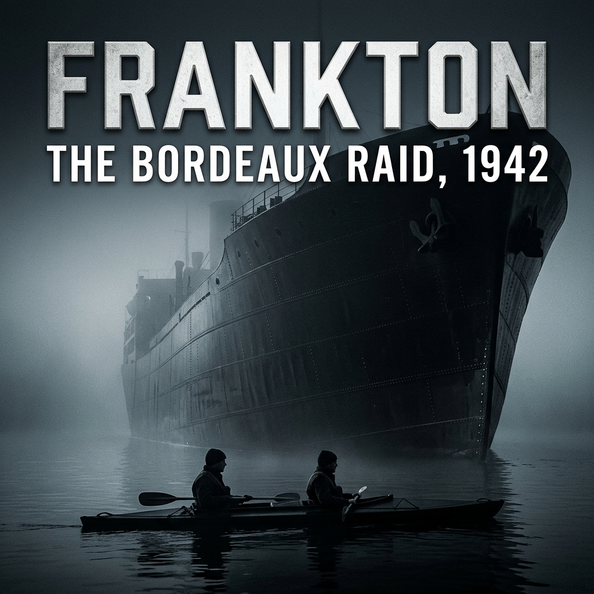

The strategic deadlock sat in the shipping returns of the Ministry of Economic Warfare.
Since the fall of Malaya and the Dutch East Indies to the Japanese imperial forces in early 1942, Germany had suffered a critical deficit in natural crude rubber. Synthetic substitutes—Buna—could not match natural latex for heavy aircraft tyres, submarine battery seals, or high-pressure engine gaskets. To keep the German war industry from seizing up, the Axis High Command established a maritime conduit: fast, heavily armed merchant blockade runners running the Allied naval blockade between Singapore, Batavia, and occupied France.
The terminal for these voyages was not on the Atlantic coast. It was Bordeaux, situated sixty miles inland from the Bay of Biscay, along the winding, heavily fortified channel of the Gironde estuary.
Between late 1941 and the spring of 1942, tens of thousands of tons of high-grade crude rubber, wolfram, tin, and quinine reached the Bassens docks.
The traditional arms of the British military could not close the gap.
Bomber Command had dispatched sorties over the Garonne, but high-altitude night bombing through persistent cloud cover cratered the civilian commercial quarters of Bordeaux while leaving the narrow hulls untouched. The Royal Navy could not force the Gironde; the entrance at the Pointe de Grave was sealed by heavy German naval batteries at Royan and Le Verdon, minefields, and relentless anti-submarine patrols.
A surface assault in the mould of Operation Chariot—the raid on the dry dock at St Nazaire three weeks earlier—was out of the question. St Nazaire was an ocean port; forcing an enclosed sixty-mile river ditch against prepared coastal artillery would require a fleet and guarantee catastrophic casualties.
Major Herbert George Hasler approached the problem not as a tactician of firepower, but as an engineer of water.
He was twenty-eight years old, fair-haired, with the quiet, detached composure of an offshore navigator. At the evacuation of Narvik in 1940, while serving as a Royal Marines landing officer under continuous fire, he had witnessed the vulnerability of heavy surface combatants to simple, asymmetric disruption, an action that had earned him an appointment to the Order of the British Empire. He did not think in terms of battalions or broadsides. He thought in terms of hydrodynamic resistance, tidal current tables, and human lung capacity.
In his quarters off Whitehall, Hasler spread out the French hydrographic charts for the mouth of the Gironde and the Bay of Biscay.
The river was vicious. At its mouth, ocean swells broke over shifting sandbars in an area known as the Overfalls, creating standing waves four to six feet high. Further inland, the tidal stream ran at four to five knots, reversing every six hours, backed by a violent tidal bore—le mascaret—that tore upriver on the flood. The banks were bordered by miles of stinking, impenetrable mudbanks and reed-beds, cut by draining tidal channels.
To conventional naval planners, the terrain was an impossible barrier. To Hasler, it was cover.
Over several weeks, working alone at a drawing board, Hasler drafted a detailed operational paper: The Employment of Canoe-borne Commandos for Sabotage in Defended Waters.
The thesis rested on a stark mechanical principle: a steel warship had eyes for steel warships. It had no eyes for canvas.
Hasler proposed infiltrating a port using small, two-man, canvas-bodied collapsible canoes—folboats. Dropped by a Royal Navy submarine ten miles off the coast to avoid the coastal minefields, the canoes would negotiate the estuary mouth under cover of darkness, riding the flood tide inland. By day, the crews would haul their craft into the tidal mudflats, cover themselves with camouflage nets threaded with native marsh grasses, and lie motionless. By night, they would paddle with the current.
Upon reaching Bordeaux, each canoe would place six magnetic limpet mines against the bilge keels of the blockade runners, using jointed wooden placing sticks and rubber suction holders. The detonators would be chemical delay fuses, set for nine hours to allow the attackers to scuttle their boats downstream and begin evasion across occupied France to the Spanish frontier before the first explosion tore through a hull.
The casualty ledger was laid out with clinical precision. It would require only twelve men: two officers, two non-commissioned officers, and eight marines.
If all six canoes were lost after placing their charges, the sacrifice of twelve men would balance the destruction of up to four capital blockade runners and tens of thousands of tons of irreplaceable war materiel. It was, in Hasler’s words, an operation of maximum economy.
In late April, Hasler submitted the paper through official Combined Operations channels.
It passed through the hands of conventional staff planners who regarded the notion of attacking an armed port sixty miles up a defended river in canvas canoes as military absurdity. But it did not stall. It landed on the desk of the Chief of Combined Operations, Commodore Lord Louis Mountbatten.
Mountbatten was an unorthodox commander whose mandate from Churchill was to disrupt the German-held perimeter of Europe through asymmetric raids. He read Hasler’s memorandum, assessed the navigation tables, and saw the strategic arithmetic clearly.
The paper was formally approved. The directive came back down the chain of command: Major Hasler was authorised to establish an experimental detachment, select twelve volunteers from the Royal Marines, requisition equipment, and report to Combined Operations when sea trials were complete.
The operation was designated by an administrative codename: Frankton.
Hasler folded his papers, locked his calculations in his dispatch case, and took the morning train south from Waterloo to Portsmouth.
The unit existed on paper before it had a single barrack room.
On 6 July 1942, the Admiralty formally authorised the establishment of the Royal Marines Boom Patrol Detachment. The title was chosen with deliberate calculation. In naval parlance, boom patrol units were low-priority defensive details assigned to motor launches that dragged grappling hooks along the anti-submarine netting and floating timber booms of major fleet anchorages. It was a posting associated with monotonous harbor policing, intended to deflect scrutiny from port authorities, dockyard workers, and any German signals monitoring the Portsmouth naval command.
For their operational base, Hasler requisitioned Lumps Fort, an 1860s coastal artillery position embedded in the shingle of Southsea seafront.
The fort was cold, damp, and defensible from prying eyes. Its granite-faced casemates were built into an earth rampart overlooking the eastern approaches to the Solent. The gun embrasures were shuttered, the vaulted brick magazines smelled of wet lime and coal dust, and the only landward access was through a single narrow gate guarded by Royal Marines police.
Hasler brought in Lieutenant John Mackinnon as his second-in-command. Mackinnon, twenty-one years old, was a Scots officer—reserved, physically robust, and possessing an even, methodical temperament that matched Hasler’s own.
The detachment’s personnel were drawn from a general Admiralty circular circulated to Royal Marines divisions at Chatham, Plymouth, and Portsmouth, requesting volunteers for "hazardous service of an unspecified nature."
Hundreds applied. Hasler and Mackinnon vetted the service records in a small whitewashed room inside the fort's main casemate, cutting down the list through a process of negative selection.
Hasler rejected candidates who had disciplinary records for brawling or insubordination, as well as those whose interviews betrayed a desire for personal distinction. Men who thought in terms of commando knives, rapid-fire weapons, and frontal assaults were useless for an operation that demanded four nights of silent paddling in the dark.
"A violent man is an impatient man," Hasler told Mackinnon as they worked through the service records. "When an impatient man gets cold, he moves. When he moves, he gets seen. We need men who can sit in their own filth for twelve hours without twitching."
Thirty-four candidates were ordered to report to Southsea for medical inspection and preliminary interviews.
One by one, the marines were marched into the casemate.
Marine William Sparks halted before the table and came to attention. He was twenty years old, five feet eight inches tall, weighing ten stone, with dark hair cut to regulation length. Born in Stepney in East London, he had enlisted in the Royal Marines at Deal in 1940 and had been serving with the Portsmouth Division.
Hasler checked the service sheet on the table.
"Sparks."
"Sir."
"You volunteered without knowing the nature of the duty."
"Yes, sir."
"You have been trained as a general service marine. This unit does not operate in companies or sections. It operates in pairs, in small craft on the water, at night. The physical requirements involve continuous exertion in freezing conditions for periods exceeding twenty-four hours. You will receive no additional pay for this service."
"Understood, sir."
Hasler looked up from the dossier. "Your record shows you have watermanship training."
"Basic boat-pulling at Portsmouth, sir."
"Can you swim?"
"Yes, sir."
"If you are captured behind enemy lines in an irregular operation of this nature, you will almost certainly not be treated under the Geneva Convention. Do you understand the implications of that?"
"Yes, sir."
Hasler made a small pencil mark on the edge of the service record. "Very well, Sparks. Report to the corporal outside and draw your bedding. You will remain inside the fort until further orders."
"Sir." Sparks saluted, turned, and marched out into the corridor.
Through the remainder of July, Hasler and Mackinnon assembled the core cadre through the same clinical intake.
From the Portsmouth division came Corporal Albert Laver, twenty-two, from Birkenhead—broad-shouldered, quiet, and possessing the natural, steady authority required of an NCO who would have to command in isolation. Paired with him in the assessment rosters was Marine William Mills, twenty-one, from Kettering, a physically powerful man with a calm, stoic demeanor.
Corporal George Sheard, twenty-seven, from Devon, was older than the average marine. Married, thoughtful, and deliberate in his movements, he had years of service behind him. He was brought in alongside Marine David Moffatt, a twenty-three-year-old from Belfast who possessed exceptional upper-body strength and extensive experience handling small rowing craft.
Sergeant Samuel Wallace, twenty-nine, an Argyll regular with nine years in the Corps, brought strict professional discipline to the ranks. With him was Marine Robert Ewart, nineteen, from Glasgow—the youngest of the volunteers, possessing an obstinate physical endurance developed in the shipyards of the Clyde.
Marine James Conway, twenty, from Stockport, had worked as a coal merchant's carter before joining the Marines; his frame was thick-set and accustomed to heavy, repetitive manual labor.
For the operational reserve, Hasler selected Marines William Ellery and Leonard Fisher—both disciplined, capable oarsmen, designated to master every phase of the mission should sickness or injury claim any of the primary crews before embarkation.
By late July, the detachment was reduced to twenty men, from which the final twelve would be chosen.
On their first evening assembled as a complete unit, Hasler stood before them in the central brick vault of Lumps Fort. The men stood in two ranks on the flagstones. The only sound was the low, rhythmic grind of the Solent shingle rolling in the swell outside the seaward wall.
"From this point forward," Hasler said, "your unit designation is the Royal Marines Boom Patrol Detachment. That is the only name you will use. You will not discuss your training with members of the Portsmouth garrison, and you will not communicate the nature of our equipment to your families."
He paused, his gaze moving down the two ranks of men.
"This detachment is being trained for an offensive operation of extreme range. It will take place entirely on the water, at night, without support from surface warships or aircraft. Success will depend on two things: your physical capacity to sustain paddling for fourteen hours without rest, and your ability to maintain absolute silence under all circumstances."
Hasler adjusted the belt of his service tunic.
"The training will be uncomfortable. It will involve sustained cold and chronic lack of sleep. Any man who feels he is physically or mentally unsuited to this regime may apply to return to general service at any time during the next forty-eight hours without prejudice on his service record. After that, you are committed."
None of the twenty men moved.
Hasler nodded once to Mackinnon. "Dismiss the parade, John."
The following morning, a three-ton lorry from the experimental establishment entered the gates of the fort. In the rear, secured under heavy tarpaulins, were the prototype components of the craft they were to take into the sea.
The crowbars squealed as Corporal Laver and Sergeant Wallace prised the lids from the packing crates. Pine splinters flew across the concrete floor of the artillery shed, releasing the sharp scent of raw timber, grease, and proofed rubber.
Inside, nestled in shavings, lay something that looked entirely unsuited for war.
Sparks stepped forward, wiping his hands on his denim dungarees. He stared down into the crate. "Looks like a glorified laundry basket, Sarge."
"Keep your opinions to yourself, Sparks," Wallace muttered, though the Scottish sergeant’s own brow was furrowed in skepticism.
It was the Cockle Mark II.
Hasler stepped up to the open crate. With practised efficiency, he and Mackinnon took hold of the gunwales and hoisted the craft onto a pair of wooden trestles. The men of the detachment gathered round in a close ring, their boots scraping on the grit.
"Fifteen feet long," Hasler said, resting a palm on the rim. "Beam: thirty-two inches. Depth: twelve inches. Empty weight: roughly ninety pounds. With two fully equipped marines, weapons, rations, and water, she displaces slightly over six hundred pounds."
The boat was a hybrid of boatbuilding and aircraft framing. The keel and longitudinal stringers were light spruce; the ribs were steam-bent ash, connected by brass hinges and held rigid by tensioned stretcher bars. But the skin was not wood or steel. The entire hull—from the timber gunwales down to the flat bottom—was made of two-ply canvas impregnated with synthetic rubber.
Hasler reached into the hull, released four brass wing-nuts on the side ribs, and pressed downward.
With a muted sigh of canvas, the sides collapsed inward, folding like an accordion. The entire boat flattened into a package less than seven inches thick.
"She’s collapsible," Hasler said, looking at the circle of blank faces. "Why?"
"So she fits in a lorry, sir?" Marine Mills offered from the back.
"No," Hasler said. "She has to pass through the torpedo hatch of a Royal Navy submarine. The hatch of a T-class boat is twenty-four inches in diameter. Nothing rigid of this length can enter or leave a submarine hull. The Cockle can."
He pulled the gunwales upward until the ash ribs clicked into their locking slots, then spun the wing-nuts finger-tight. The canvas snapped taut like the skin of a bass drum.
"She draws barely six inches of water laden," Hasler continued, walking the length of the craft. "She will slip over sandbars, through mud shallows, and across harbour booms where an armed launch would ground herself. But she has no armour. A nine-millimeter pistol round will pass through both sides. A burst from a machine gun will tear her in half. If you strike a jagged iron spar at four knots, the canvas will rip from stem to stern."
"And if she rolls over, sir?" Sparks asked.
"If she rolls over," Hasler said coldly, "she sinks. The reserve buoyancy is provided solely by kapok-filled cushions in the bottom and inflatable canvas bladders lashed under the decks. You will ensure she does not roll over."
He gestured to the open deck. The cockpit was a single open expanse with two seating positions, one forward, one aft. Between them lay the cargo well. Over this fitted a heavy, proofed canvas spray deck—the apron—secured around the timber coaming by elastic shock-cord.
Hasler picked up the apron and demonstrated. "Each man sits sealed into his station by a canvas skirt drawn tight around his chest with drawstrings. It keeps the sea out. It also means that if you capsize, you have five seconds to clear your skirt before you fill with water and go down with her."
Next came the equipment, laid out on a greaseproof tarpaulin.
First were the paddles. They were eight feet long, double-bladed ash, the wood rubbed with linseed oil and painted a dead, matte sea-grey to eliminate moonlight reflection. Around the loom of each paddle, just inside the blade, Hasler had fitted thick rings of cut inner-tube rubber.
"Drip rings," Hasler explained. "Without them, cold salt water will run down the shaft into your sleeves with every stroke. After three hours, your forearms will be raw with saltwater sores. Keep them properly positioned."
Then came the weapons.
Hasler lifted a dark, heavy object from a baize-lined box. It was circular, roughly ten inches across and three inches thick, painted matte black. On one face were six powerful horseshoe magnets, shielded by light brass plates to keep them from seizing onto random iron surfaces before use.
"The Admiralty Type A Limpet mine," Hasler said. "Four and a half pounds of high explosive. Two of these, placed six feet below the waterline against a ship's engine room plates, will tear a hole large enough to sink a ten-thousand-ton merchantman."
He held up a six-foot jointed wooden rod with a spring-loaded brass claw at the tip: the placing stick.
"A loaded canoe sits low," Hasler said, demonstrating the motion. "You cannot lean over the gunwale to push the mine against the steel plating without capsizing your boat. You mount the limpet to the claw of this stick. You ease alongside the target. The bow man secures the canoe to the ship’s hull using this."
He held up an ordinary plumber’s rubber suction cup, fitted with a short lanyard.
"You moisten the rubber, press it against the hull plates, and hold the canoe firmly in place with one hand. With the other, you lower the placing stick into the water. The magnets take hold with forty pounds of magnetic pull. You pull a pin on the chemical delay fuse, twist the stick to release the claw, and back away. Silently."
Sparks looked from the magnetic mine to the flimsy canvas boat. The mathematics of the operation were becoming brutally clear. They were to paddle sixty miles into the heart of an enemy fortress inside a folding canvas skin, clamp high explosive to steel ships using rubber sink-plungers and broomsticks, and paddle out again before the harbour blew up.
"Starting this afternoon," Hasler said, his voice dropping into the quiet, rhythmic cadences of an instructor who tolerated no mistakes, "you will learn to assemble this craft in the dark. You will do it blindfolded until you can seat the stretchers and tighten the wing-nuts in under two minutes by touch alone. If a man drops a nut on the deck plates, the entire detachment will paddle five miles before breakfast."
He looked at Mackinnon. "Take the first six men down to the mudflats, John. Let them see how she handles the Solent chop."
"Sir," Mackinnon answered.
Sparks bent down to take the bow of the canoe. The wood was cold under his calloused fingers. When he lifted, the whole frame flexed slightly in his hands, creaking with the tension of the canvas. It weighed almost nothing. It felt terrifyingly fragile.
Outside, across the gravel bank of Lumps Fort, the Solent was turning the colour of lead under a gathering autumn squall.
The stroke was mechanical.
Catch. Pull. Twist. Feather.
The double-bladed ash paddle sliced the freezing surface of the Solent, entered the chop without a splash, levered seventy pounds of resistance against the shoulders, and lifted clear. A single bead of icy brine dropped from the rubber ring onto Bill Sparks’s canvas apron.
Tink.
"You’re clicking the coaming, Sparks," Hasler’s voice came from the stern. It was not angry; it was worse. It was entirely devoid of emotion. "Keep the shaft flat on the recovery. If I can hear that blade touch the timber from two feet away, a German sentry on a jetty will hear it from three hundred yards."
"Sir," Sparks whispered. His throat burned with the dry, metallic taste of salt and exhaustion.
It was three in the morning. They had been on the water since dusk, paddling in a great, punishing loop from Southsea shingle, out across the tide rip to the Isle of Wight, up into the black throat of the Beaulieu River, and back across the shipping lanes. Eleven hours without leaving the canvas cockpits.
Sparks’s hands were no longer hands. They were clawed lumps of raw meat. The friction of the wooden shaft had raised blister upon blister across his palms; the salt spray had torn them open, weeping clear fluid that glued his flesh to the ash loom. When he uncurled his fingers at the end of a run, the skin tore anew with a sound like ripping paper.
Around them, the four other Cockles moved like shadows through the swell.
In the weeks since August, Hasler had winnowed the detachment down to twelve men and locked them into permanent two-man crews. He did not pair them by rank or friendship; he paired them by weight, temperament, and tidal rhythm.
In Catfish, Hasler took the stern—navigating, steering, and setting the tactical tempo—with Sparks in the bow, setting the stroke and handling the mooring lines and placing sticks.
In Crayfish, Corporal Albert Laver took the stern with Marine William Mills in the bow. They were the most physically powerful crew, their strokes deep, measured, and unbreakable.
In Conger, Corporal George Sheard steered from the stern, his watchful, protective instincts anchoring the raw, heavy-shouldered strength of David Moffatt in the bow.
In Coalfish, Sergeant Samuel Wallace paired with the nineteen-year-old Glaswegian, Robert Ewart—the veteran regular soldier instilling silent iron into the youngest marine in the unit.
In Cuttlefish, Lieutenant John Mackinnon took the helm with Marine James Conway in the bow, the quiet officer and the stocky former coal-hauler moving their boat with effortless, deceptive grace.
And in reserve, crew Cachalot: Marines William Ellery and Leonard Fisher, ready to step into any hull if disease or injury struck before launch.
The training was devoid of heroics. It was an exercise in physiological attrition. Hasler forced them to paddle forty, forty-five, fifty miles at a stretch, pushing them into the hallucination stage of sleep deprivation. Men fell asleep mid-stroke, their paddles dragging in the black water, only to be jerked awake by the icy shock of a wave breaking over their spray aprons.
They learned to urinate into empty condensed milk tins beneath the apron while keeping the boat balanced on a rolling swell. They learned to swallow cold, lard-thick pemmican without gagging to keep their core body temperatures from dropping into fatal hypothermia.
Then came the camouflage trials.
One gray morning in mid-October, Hasler led the five canoes into the desolate tidal flats of Langstone Harbour. The tide was draining rapidly, leaving vast expanses of grey, stinking mud and stunted clumps of sea-grass.
"Ground craft," Hasler ordered softly.
The five canoes slid into the shallow ooze. The men scrambled out, sinking to their knees in the cold, suctioning silt, and dragged the loaded Cockles deep into the marsh grass.
Hasler pulled out large, coarse-mesh scrim nets. Over weeks, the men had painstakingly threaded the netting with dried eelgrass, brown wrack, and reeds plucked from the shore, matching the exact colouration of the Hampshire estuaries. They threw the nets over the boats, pulled the camouflage tight over the cockpits, and crawled beneath them, lying belly-down in the freezing mud with only their noses and eyes clearing the sludge.
"No movement," Hasler whispered. "For any reason."
For seven hours, the twelve men lay motionless. The autumn wind bit through their woollen underwear and denim battledress. Silt crept into their boots, their sleeves, their mouths. Shivering began—violent, uncontrollable tremors that threatened to rustle the dead reeds. Hasler watched them through narrowed eyes, his face pressed against a clump of salt-marsh.
"Control your respiration," he murmured into the mud. "Slow it down."
At midday, the deep thrum of aircraft engines rolled across the coast. An RAF spotter plane, tasked by Combined Operations to locate the detachment, banked low over the harbour. The aircraft circled three times at five hundred feet, its shadow sweeping across the mudbanks.
Beneant the netting, Sparks felt an itch on his jaw that felt like a hot needle. He did not touch it. Beside him, Hasler’s body was as rigid as stone.
Twenty minutes later, a naval patrol launch chugged slowly up the winding tidal creek, its twin diesels thudding in the cold air. The launch passed within twenty yards of Catfish. An officer on the bridge swept the bank with binoculars, looking straight through the cluster of reeds where two tons of men and explosives lay concealed.
The launch’s wash rippled the reeds, slapping against the side of the camouflaged hull.
The boat did not stop. It chugged steadily out toward the channel.
Only when the engine noise had vanished into the distance did Hasler stir. He lifted the net an inch.
"You see?" Hasler said quietly. His lips were blue with cold, but his eyes were bright. "The human eye looks for shape and motion. If you abandon shape and you kill motion, you do not exist."
By the end of October, the men of the RMBPD were unrecognizable from the green volunteers who had marched into Lumps Fort. They were lean to the point of emaciation, their skin tanned leather-hard by salt and wind, their palms calloused into yellow horn. They moved without speaking, using single-word calls or hand signals to execute complex evolutions in the dark.
They had conquered the boat. They had mastered the cold.
What they did not know—what Hasler was not permitted to tell them—was that while they were freezing in the mud of Langstone Harbour, a bitter bureaucratic battle was unfolding in London, one that would turn their upcoming descent into the Gironde into an operational disaster before they even stepped aboard the submarine.
In the autumn of 1942, British intelligence on the port of Bordeaux was divided between two organisations that operated in near-total isolation from one another.
At 64 Baker Street, headquarters of the Special Operations Executive’s French Section, Colonel Maurice Buckmaster was receiving encrypted wireless transmissions from south-western France. The signals originated from Claude de Baissac, a Mauritian-born operative code-named "David," who had parachuted into France in July to establish the "Scientist" network.
De Baissac’s mission was industrial and infrastructural sabotage across the Gironde and Landes regions. He had based himself in Bordeaux, where he had methodically penetrated the commercial perimeter of the port.
Through local contacts, de Baissac had recruited key French personnel inside the Bassens docks: crane operators, customs clerks, and dockers who had daily, unhindered access to the deep-water berths. By late October, Scientist had established a working sabotage cell with access to the German blockade runners discharging raw rubber and vegetable oils from the Far East. De Baissac reported to London that his French dockers were prepared to smuggle plastic explosives directly into the holds and engine spaces of the ships.
His operational timeline aimed for December.
His reports to Baker Street were clear: the sabotage of the Axis merchant vessels could be executed from within, dressed as industrial accidents or structural failures, which would minimise the risk of violent collective reprisals against the French dock population.
Two miles away, inside the Admiralty and at Combined Operations Headquarters, de Baissac’s signals were unknown.
The division between the regular military apparatus and the Special Operations Executive was institutional and severe. The Admiralty viewed the SOE—established under the Ministry of Economic Warfare—as an unvetted civilian outfit whose operations lacked naval discipline and whose security was chronically porous. In turn, Combined Operations guarded its own operations with strict naval secrecy.
Operation Frankton had been classified Category A. Under Admiralty security directives, knowledge of the planned canoe raid was restricted strictly to the planning cell at Richmond Terrace, the operational crew of HMS Tuna, and the Royal Marines Boom Patrol Detachment itself.
No notification was forwarded to Baker Street. No intelligence was requested from Section F regarding conditions on the Bassens quays, the disposition of French security guards, or the presence of British agents in the city.
The Admiralty’s operational planning assumed the port of Bordeaux was a closed enemy target, devoid of friendly assets. The SOE assumed that any British action against the blockade runners would come through their own embedded agents.
Neither organization knew the other was targeting the exact same hulls.
The consequences of this failure of inter-service liaison were structural and permanent. If Hasler’s canoes penetrated the harbour and detonated mines against the ships, the immediate German military response would not distinguish between an external naval raid and domestic sabotage. The Kriegsmarine and the Gestapo would lock down the docks, declare martial law across the waterfront, arrest the French dockers, and dismantle the civilian networks that Scientist had spent four months constructing.
Unaware of the impending collision, the Royal Marines Boom Patrol Detachment reached the end of their preparation.
On 25 November 1942, Hasler received movement orders from Combined Operations. The training phase at Southsea was terminated.
The six Mark II Cockles—their canvas skins scrubbed, joints greased, and rudders tested—were packed into their transit crates and loaded onto a military flatbed lorry alongside forty-eight Type A limpet mines, placing sticks, and cold-weather rations.
That evening, twelve Royal Marines paraded at Lumps Fort for the final time. They were issued their travel warrants, boarded a sealed military coach at Portsmouth railway station, and began the journey north to the Clyde.
In occupied Bordeaux, Claude de Baissac’s dockers continued their routine shifts on the Bassens quays, waiting for their explosives to be cleared by London.
In the waters of Holy Loch, Scotland, the submarine that was to bring twelve tons of high explosive and ten men to the mouth of the Gironde was already taking on fuel.
The Royal Marines Boom Patrol Detachment arrived at the submarine base on Holy Loch under escort from the Clyde naval command. Stationed in the loch was the submarine depot ship HMS Forth, which provided technical support and living quarters for the 3rd Submarine Flotilla.
Moored alongside Forth lay HMS Tuna, a Group Two T-class patrol submarine commanded by Lieutenant Commander Richard "Dick" Raikes, RN.
Thirteen members of the detachment were manifest for embarkation. Hasler had brought six two-man operational crews and one additional unassigned reserve to cover sickness or injury during the passage south:
The submarine’s crew was already engaged in pre-sailing preparations when the marines marched onto the casing. The transfer of the detachment’s equipment from Forth’s deck required precision and physical labor.
Because Tuna was an operational submarine embarking on an offensive patrol, her interior was already loaded to capacity with sea stores, fuel, fresh water, and sixteen 21-inch Mark VIII torpedoes. The only opening through which the six Mark II Cockles could enter the hull was the forward torpedo-loading hatch.
Set into the deck casing forward of the conning tower, this hatch was an oval steel tube set at an angle of roughly thirty degrees to the horizontal, equipped with bronze rollers to slide torpedoes down into the forward compartment. Its internal clearance was just over two feet.
The six canoes were stripped of their floorboards, aprons, and stretchers. With the canvas sides collapsed flat and pinned by their brass wing-nuts, each folded hull was roughly seven inches thick, thirty-two inches wide, and fifteen feet long.
Under Hasler’s direction, the marines and a working party of submariners formed a line on the casing.
"Ease them down flat," Hasler instructed. "Do not let the canvas take the weight against the hatch rollers."
One by one, the craft—Catfish, Crayfish, Conger, Coalfish, Cuttlefish, and Cachalot—were passed through the angled hatchway into the forward torpedo compartment. The clearance on either side of the bronze hatch dogs was less than two inches.
Below deck, the torpedo compartment was choked with equipment. The collapsed canoes were hoisted above the torpedo racks and lashed directly to the overhead frames using hemp lines. Lashed beneath them were the wooden crates containing forty-eight Type A limpet mines, the bundles of jointed ash placing sticks, the camouflage netting, spare paddles, and the men’s personal kitbags.
The addition of thirteen Royal Marines overwhelmed the living accommodation. A T-class boat carried an operational crew of over sixty men; there were fewer than forty bunks on board.
The submariners slept in shifts—hot bunking—while the marines were assigned canvas mattresses laid out directly over the steel floor plates or slung by cords between the greasy steel bodies of the reserve torpedoes.
Raikes met Hasler in the wardroom shortly before midday to confirm sailing orders from Flag Officer Submarines. The transit down the west coast of Ireland and across the Bay of Biscay was planned to take six days, running submerged during the hours of daylight to evade German aerial reconnaissance from western France, and surfacing at night to charge the main batteries.
At 14:00, the last lines to HMS Forth were slipped.
On the casing, the torpedo-loading hatch was swung down, the rubber gasket seated, and the heavy dogs driven home with a steel mallet. Inside the forward compartment, the grey daylight cut out, replaced by the yellow glow of low-wattage bulbs behind wire cages.
The hull began to vibrate as Tuna’s diesel engines engaged. The submarine moved slowly away from the depot ship, escorted by an armed trawler through the anti-submarine boom at the mouth of Holy Loch, and turned south down the Firth of Clyde toward the North Channel.
In the forward compartment, Sparks and Mills cleared the gangway between the torpedo racks, securing the last loose lashings on the placing sticks as the motion of the open sea began to lift the boat.
The passage south down the west coast of Ireland and into the Bay of Biscay established a rigid, punishing operational cycle.
By day, to prevent detection by long-range Luftwaffe maritime patrols—Focke-Wulf Fw 200 Condors operating from Mérignac near Bordeaux and Junkers Ju 88s out of Brest—Tuna ran submerged. She trimmed down to seventy or eighty feet, moving slowly on her electric motors at two to three knots to conserve battery power.
Below the surface, the submarine was entirely quiet, but the physical environment degraded steadily with each passing hour.
With thirteen additional men living in the forward torpedo room, the boat’s oxygen reserves depleted significantly faster than on a standard patrol. By mid-afternoon, the air grew warm, humid, and stale. Condensation ran down the cold steel plates of the pressure hull and dripped continuously onto the canvas hulls of the Cockles stowed above the torpedo racks.
The build-up of carbon dioxide produced persistent, throbbing headaches and physical lethargy. Matches struck to light cigarettes would flare briefly and immediately die for lack of oxygen. To minimise consumption, Raikes placed the boat on strict air-conservation routine: off-duty personnel were required to remain lying down, and all non-essential movement through the central control room was prohibited.
After nightfall, Tuna surfaced to run on her twin Admiralty diesels and charge the main batteries.
The moment the conning tower hatch opened, freezing Atlantic air rushed through the ventilation trunks, clearing the bilges of foul air. But the surface brought violent physical motion. In early December, the Bay of Biscay was subject to heavy, rolling winter swells. The narrow, round-bilged hull pitched and rolled up to thirty degrees.
In the forward compartment, the marines lay wedged between the grease-coated casings of the Mark VIII torpedoes, fighting acute motion sickness. Vomit sloshed in buckets on the deck plates alongside the lashing rings.
Despite the conditions, Hasler maintained a strict daily regimen of briefing and equipment maintenance.
Working under the dim red battle-lamps in the narrow passage between the torpedo racks, Hasler took each two-man crew through the target materials brought from Combined Operations. He spread high-altitude reconnaissance photographs taken by RAF Spitfires across his knees.
"Our intelligence is derived from photographic reconnaissance and naval decrypts," Hasler explained to Sparks, who sat opposite him on an upturned wooden ammunition crate. "The Gironde is the sole funnel through which German blockade runners bring raw materials from the Far East into occupied territory."
His pencil indicated the river’s course, pointing out the major facilities sixty miles inland.
"The port is divided. The first objective is the Bassens sector, five miles downriver from the city center. Long, modern commercial wharves equipped with heavy portal cranes. This is where the deep-draft blockade runners discharge raw rubber, wolfram, and tin into the railway network."
He then traced the river south to where the Garonne made a horseshoe bend around the city itself.
"The second objective is the central Bordeaux waterfront: the Quai des Chartrons, the Quai de Bacalan, and the entrance to the Bassin à Flot. Fast merchant vessels and armed naval escort craft berth here."
Hasler reviewed the specific ships identified in the latest Admiralty shipping bulletins: the German cargo liner Tannenfels (7,840 tons), which had recently arrived from Malaya with thousands of tons of natural rubber; the Dresden; the Portland; the Alabama; and the Kriegsmarine naval replenishment tanker Tacoma.
"The force will operate in two divisions," Hasler stated. "Catfish and Crayfish will take the western city quays. Conger, Coalfish, and Cuttlefish will assault the Bassens wharves and the petroleum jetties. If any craft is separated before reaching the port, there will be no search. You will proceed to your assigned sector independently, attach your charges, and sink your craft."
While Hasler briefed, Corporal Laver and Marine Mills stripped and inspected the Type A limpet mines.
Each mine was unpacked from its baize-lined wooden crate. The commandos inspected the rubber sealing gaskets and verified that the six horseshoe magnets on each unit were clean of rust and metal filings.
Next came the chemical delay pencils. Laver checked the brass housings, verifying that the small glass ampoules of copper chloride acid were intact and seated above the internal retaining wire.
"The delay is calculated for nine hours at winter water temperatures," Hasler told the men as they checked the placers. "When the ampoule is crushed, the acid begins eating through the copper wire. In cold water—six degrees Celsius—the wire takes roughly five hundred and forty minutes to dissolve and release the spring-loaded striker into the percussion cap."
"What margin do we have on the chemical timing, sir?" Laver asked.
"A variation of up to one hour either way," Hasler replied evenly. "You will not crush the ampoules until the mine is firmly clamped to the target’s hull plating. Once the vial is broken, you cannot recall it."
On 4 December, Lieutenant Mackinnon oversaw the distribution of escape packs.
Each commando was issued an escape purse containing French francs, emergency Horlicks malted-milk tablets, Benzedrine pills, and miniature brass compasses disguised as uniform collar studs and fly buttons. Each man also received a silk map depicting south-western France and the Spanish border, designed to be rolled tightly and concealed inside the seams of their woollen smocks.
By 5 December, Tuna had completed her transit of the Bay of Biscay, reaching the outer edge of the seventy-fathom continental shelf eighty miles west of the Gironde estuary.
The submarine remained dived throughout the daylight hours of the 5th, navigating by dead reckoning and sounding gear.
That evening, Raikes came forward through the watertight door into the torpedo compartment to confer with Hasler. The submarine was now forty-eight hours away from the drop point.
"We enter the coastal approaches tomorrow, Major," Raikes said. "The outer German defensive belt begins at the twenty-fathom line. If the weather permits, we surface off Montalivet on the night of the sixth."
Hasler closed his notebook and secured the aerial photographs inside his dispatch case. "We are ready, Captain."
Around them in the dim, sweating compartment, the twelve other marines sat in silence, watching the condensation drip from the overhead frames onto the folded hulls of the Cockles.
The operational plan had designated the night of 6 December for the launch.
By 16:00, the forward torpedo compartment was in a state of quiet, focused preparation. The ten marines of the primary crews, along with Ellery and Fisher of the reserve, began dressing in their operational gear.
First came the heavy two-piece woollen underwear, followed by khaki flannel shirts, thick jersey pullovers, and dark, hooded camouflage smocks treated with proofing oil. On their feet they wore thick seaboot stockings and black rubber-soled canvas deck shoes, designed to grip wet timber and make no sound on steel deck plating.
Sparks sat on the edge of a torpedo rack, smearing his face, neck, and ears with a greasy mixture of burnt cork and olive-drab cream. Laver and Mills helped each other check the lashings on their fighting knives and the drawstrings of their canvas spray aprons.
Every item of civilian identification—letters, paybooks, photographs—had been surrendered to Lieutenant Mackinnon to be locked in the submarine’s safe. In their pockets remained only their escape kits, emergency rations, and water purification tablets.
The adrenaline had pushed back the nausea and the headache of the foul air. The men were coiled, silent, waiting for the clatter of the torpedo hatch dogs being knocked clear.
At 18:30, the call came forward from the control room.
"Major Hasler to the control room, please. Captain’s compliments."
Hasler stood up, checked the lanyard of his silenced Colt .45, and ducked through the oval watertight door.
In the control room, the red night-lighting cast deep shadows across the brass dials and valve wheels. Lieutenant Commander Raikes stood beside the periscope standard, his peaked cap shoved back on his head, a towel draped around his neck. He stepped aside from the eyepiece and gestured for Hasler to look.
Hasler gripped the bronze handles and leaned in.
Through the crosshairs, the surface of the Bay of Biscay showed as a turbulent expanse of black water, flecked with dirty white crests under a fractured moon. Two miles off the port bow, a low, dark pencil-line marked the French coast near Montalivet.
Between the submarine and the distant shore, two silhouettes moved slowly through the chop: German Vorpostenboote—armed coastal trawlers—sweeping the shoals on an irregular patrol grid.
"We have two problems, Major," Raikes said quietly. His voice was flat with exhaustion. "The first is the surface patrol. They’re running an active sweep across our drop sector. If I surface to clear the casing now, their hydrophones will pick up our diesels the moment we blow tanks."
Hasler kept his eyes on the periscope reticle. "And the second?"
"The second is the bottom," Raikes said. He pointed to the navigational chart weighted down with brass dividers on the plotting table. "The Admiralty intelligence on the German defensive minefield off the Banc des Olives is inaccurate. The shoals have shifted, and the German barrier sits three miles further out to sea than our charts indicate. I cannot close to the five-mile line without risking tearing the boat’s belly open on a moored horn mine."
Hasler studied the pencilled lines on the chart. "What is our current distance from the mouth of the Gironde?"
"Twelve miles," Raikes replied. "If you launch from here tonight, against this ebb, you will have to paddle twelve miles of open, breaking sea just to reach the Pointe de Grave. You will miss the flood tide. You will be caught on the open river in broad daylight before you reach your first hide."
The calculation was absolute. The entire mission depended on riding the four-knot flood tide up the estuary under cover of darkness. If they launched now, the men would exhaust their physical reserves fighting an open Atlantic swell before they even entered the river’s mouth, only to be caught in the open water at dawn.
"We postpone," Hasler said.
Raikes nodded once. "We withdraw ten miles west into deep water, sit on the bottom until tomorrow afternoon, and try again when the patrol shifts. We launch on the night of the seventh."
Hasler walked back through the watertight door into the forward compartment.
The twelve men looked up from their bunks. Sparks held his paddle in his greased hands, ready to move.
"Stand down," Hasler said. His voice was level, betraying nothing of the tension in the control room. "The drop is postponed twenty-four hours. Unpack nothing. Clean the grease off your faces and lie down."
The air went out of the compartment like a punctured tire.
Sparks lowered his paddle. The sudden drop in adrenaline left him feeling hollowed out, his muscles trembling with sudden, sour fatigue. He took a rag and began wiping the black grease from his cheeks, leaving greasy streaks on his collar.
No one spoke. To be primed for an operation of this nature and then thrown back into the bilges was an acute psychological torment.
Tuna angled downward, sliding away from the French coast back into the deep trenches of the Bay of Biscay. At ninety feet, Raikes ordered the electric motors stopped. The submarine settled into the soft mud of the seabed with a gentle, sickening shudder.
For the next twenty-four hours, the detachment existed in suspended animation.
To conserve the submarine’s depleted air supply, the crew and the marines were ordered into their bunks. All non-essential lighting was switched off. Movement was forbidden.
The air in the torpedo compartment grew increasingly toxic. The carbon dioxide concentration reached levels where breathing required conscious muscular effort. Sparks lay on his lashing frame, his chest heaving shallowly, his skull pounding as if banded in hot iron. The condensation from the pressure hull dripped rhythmically onto his face: drop, drop, drop.
Every man knew the arithmetic of the delay. They had lost one day of their operational margin. Their food rations were calculated to the ounce; their physical reserves were being eaten away by the foul air and the enforced immobility.
If they did not launch on the night of 7 December, the operation would have to be abandoned altogether. Tuna could not remain on the enemy coast indefinitely; her fuel and battery reserves would compel Raikes to turn back for Holy Loch.
At 17:00 on the evening of 7 December, the call pipe finally whistled throughout the boat.
"Hands to diving stations. Prepare to surface."
The submarine vibrated as the high-pressure air blew the ballast tanks. Sparks sat up in the darkness. His head swam with dizziness, but as he pulled his dark woollen cap over his ears, he saw Laver, Mills, and the others doing the same.
The time had run out. Tonight, there would be no standing down.
At 19:40 on 7 December, Tuna reached her designated launch position roughly ten miles off the coast of Montalivet, west of the Gironde estuary.
The submarine’s main ballast tanks were blown, and the boat surfaced into the darkness. When the conning tower hatch was opened, the Atlantic air swept down through the hull—freezing, damp, and carrying a steady west-north-westerly wind.
Forward in the torpedo compartment, the working party immediately set to work. The dogs on the forward torpedo-loading hatch were knocked back, and the heavy angled steel cover was hoisted open to the night sky.
A swell of five to six feet was running across the continental shelf. On the submarine's narrow, rounded casing, water washed over the steel plating and drained through the free-flooding slots. A party of submariners, secured to the casing by lifelines, took station on either side of the hatch to receive the craft.
The six collapsed Cockles were unlashed from the overhead frames in the torpedo compartment and passed up the thirty-degree incline.
The fourth craft to be hauled up was Cachalot, designated for Marines William Ellery and Leonard Fisher.
As the canoe was being guided up the steel cylinder, Tuna rolled heavily to port into the trough of a swell. The movement caught the working party off-balance. The boat shifted on the hatch rollers, and the canvas skin of Cachalot’s port side snagged firmly on the protruding steel dog of the hatch coaming.
Before the weight could be checked from below, the fabric tore against the metal bracket—a jagged rip across the rubberised canvas and into the ash stringer beneath.
The craft was hauled out onto the casing and laid flat. Hasler climbed up the hatch ladder to inspect the damage by the shielded beam of a red torch.
The tear measured over six inches. The synthetic rubber proofing was shredded, and the structural canvas weave was torn through to the interior.
Ellery stood on the wet casing, looking at the breach. "We have the canvas patches and solution in the repair bag, sir."
Hasler examined the ragged edges of the gash. The surrounding fabric was saturated with cold salt spray.
"The adhesive will not vulcanise on wet canvas at this temperature," Hasler said. "A cold patch under these conditions will fail the moment the hull flexes in the surf. She is unseaworthy."
The operational decision was immediate. There was neither the time nor the facility on an exposed submarine deck in enemy coastal waters to carry out structural repairs.
"Strike Cachalot below," Hasler ordered.
Ellery and Fisher were ordered to stand down and remain aboard the submarine. With Marine Norman Colley already held in reserve, three of the detachment’s thirteen men would stay with Tuna. The striking force was reduced from six craft to five: ten men.
The remaining five Cockles—Catfish, Crayfish, Conger, Coalfish, and Cuttlefish—were passed through the hatch without further incident.
On the casing, working on the slippery, curved steel plating in near-total darkness, the marines assembled the craft. They unfolded the canvas sides, slid the wooden cross-stretchers into place, and tightened the brass wing-nuts until the hulls were rigid.
The equipment was passed up through the hatch and lashed into the central cargo compartments:
One by one, the five canoes were manhandled over the submarine’s rounded saddle tanks and lowered into the sea.
The Cockles bobbed violently alongside the steel hull, rising and falling with the surge of the swell. The commandos climbed down the casing, timing their movements with the rise of the water to drop into their seating positions.
Sparks boarded Catfish forward, settling his boots onto the light floorboards, followed by Hasler in the stern. Laver and Mills took Crayfish; Sheard and Moffatt boarded Conger; Wallace and Ewart took Coalfish; Mackinnon and Conway boarded Cuttlefish.
Once seated, each man pulled his proofed canvas spray apron over the timber coaming, securing the elastic shock-cord and drawing the waist-strings tight around his chest to seal out the wash.
On the conning tower, Lieutenant Commander Raikes leaned out from the bridge. The transfer had taken forty-five minutes. Tuna was running on her main diesels, maintaining steerage way into the wind.
"All craft clear, Major?" Raikes called down quietly.
"All craft clear, Captain," Hasler answered from the water. "Thank you."
Raikes saluted and ducked down into the conning tower. The heavy steel hatch swung down and seated against its rim.
Moments later, Tuna’s ballast tanks flooded. The dark casing sank beneath the foam, the conning tower dipped below the swell, and the submarine slipped beneath the surface, turning back toward deep water.
The five canvas canoes were left alone on the open Atlantic, ten miles west of the Gironde, with the incoming tide beginning to make.
Once the hull of HMS Tuna was gone, the five Cockles formed into single line ahead.
Hasler led the column in Catfish, with Sparks setting the stroke from the bow. Following at intervals of roughly twenty feet came Crayfish (Laver and Mills), Conger (Sheard and Moffatt), Coalfish (Wallace and Ewart), and Cuttlefish (Mackinnon and Conway).
The visual reference in the pitch darkness was minimal. Each canoe carried a small patch of luminous paint on its stern deck coaming, barely visible beyond three yards. The men kept station by aligning their bows with the pale, phosphorescent disturbance left by the paddle blades ahead.
Hasler checked the magnetic compass mounted on the wooden cross-bar before him. "Steer zero-nine-zero," he whispered.
The bearing pointed due east, toward the invisible notch between the northern bank of the estuary and the low sand spit of the Pointe de Grave.
For the first hour, the canoes made steady progress across the open Atlantic swell. The sea state was moderate, running in long, regular ridges from the west-north-west. The double-bladed ash paddles dipped in unison—twenty-eight to thirty strokes a minute—the rubber drip rings clicking softly against the canvas spray aprons with every recovery.
At five miles out, the character of the night changed.
On the eastern horizon, five miles ahead, the distant beams of German coastal searchlights from the naval batteries at Royan and the Pointe de Grave swept across the low cloud base. The shafts of white light flickered periodically over the water, searching for incoming surface craft. At that range, the canoes—sitting less than twelve inches above the waterline with their crews hunched low in dark smocks—presented virtually no silhouette against the dark expanse of the sea.
What posed an immediate threat was the sound.
By 22:00, a low, continuous roar began to carry across the water. It was the sound of the Overfalls—the treacherous expanse of breaking standing waves where the outgoing river current collided with the Biscay swell over the shifting sandbars of the Banc des Olives.
The long ocean swell abruptly collapsed into a confused, violent sea.
The water ceased to roll in predictable lines. Instead, steep, vertical pyramids of water—four to six feet high—erupted from the darkness without pattern. The Cockles, designed for flat water, were thrown violently off course.
Sparks buried his paddle deep into the foam on the port side, fighting to keep Catfish’s bow pointed into the oncoming ridges. A breaking crest slammed over the spruce stem, driving gallons of freezing brine across the forward deck and burying Sparks to the chest before crashing into the canvas spray apron.
The apron stretched tight against the shock-cord, but the weight of water pressed the fabric down onto his thighs. Icy brine leaked past the waist drawstrings, soaking his woollen underwear and pooling in the bilge around the spruce floorboards.
"Keep her head to the seas!" Hasler shouted over the roar of the surf. "Paddle through!"
Behind them, the four other crews fought the same mechanical battle. The flexible canvas skins of the Cockles groaned under the strain, the ash ribs flexing and twisting as the craft dropped into the deep troughs between the waves.
In this turbulent water, the formation began to disintegrate.
Maintaining a distance of twenty feet became impossible as the canoes were repeatedly pitched sideways or driven backward by the counter-current. The crews were blinded by driving salt spray that crusted on their eyebrows and sealed their lips with bitter brine.
Near 23:00, the turbulence reached its maximum force as the flood tide began to force its way under the outgoing surface ebb.
A heavy, steep breaker struck the column from an angle. Catfish broached slightly, her port gunwale dipping to the water’s edge before Hasler righted her with a violent sweep of his paddle.
Through the roar of breaking water came a brief, muffled shout from the rear of the line.
Hasler brought Catfish’s head around, holding her into the wind with backwater strokes. He drew his red-lensed torch from his smock, shielding the glass with his palm, and swept the immediate perimeter of dark water.
Laver’s Crayfish emerged from a trough fifteen yards away, her crew paddling furiously to clear the breakers. Seconds later, Sheard and Moffatt in Conger wallowed into view, followed by Mackinnon and Conway in Cuttlefish.
Hasler counted the boats in the dim red reflection.
There were four.
Where the fourth canoe in line should have been, there was only the black, boiling expanse of the Overfalls.
Sergeant Samuel Wallace and Marine Robert Ewart in Coalfish were nowhere to be seen.
In the calmer water past the first line of shoals, Hasler held Catfish into the wind with gentle backwater strokes.
Beside them, the three surviving canoes converged. Corporal Laver brought Crayfish alongside Catfish’s port gunwale, while Lieutenant Mackinnon in Cuttlefish and Corporal Sheard in Conger hovered three yards off. The men’s breath came in ragged, white plumes against the dark.
"Wallace?" Hasler whispered across the water.
"Not behind us, sir," Laver answered, his voice strained. "He was on our quarter entering the rip. A crest broke over his apron, and the line parted. We lost his wake."
Hasler reached inside his smock and drew out the small vulcanite reed whistle—the seagull call the detachment had used during night exercises across the Solent. He pressed it to his lips and blew two short, low trills.
The sound carried thinly over the black water, swallowed almost instantly by the rumble of the Overfalls behind them.
They waited. The only response was the slap of the chop against the canvas hulls and the distant, mechanical thrum of the diesel generators at the Le Verdon naval mole.
Hasler checked his luminous watch. Ten minutes had passed since clearing the rip. The flood tide was running south-east into the estuary at over three knots. Every minute spent idling on the surface burned the darkness they needed to reach their first daytime hide before dawn.
"We cannot search," Hasler said quietly. "If Wallace is afloat, his orders are to make for the target independently. If he has capsized, there is nothing we can do for him. Form single line ahead on my stern."
Catfish swung round, her bow biting into the current, and the four remaining craft resumed the ascent.
Half a mile behind them, near the northern tip of the Pointe de Grave, Coalfish was gone.
In the confusion of the first overfall, a steep, vertical wall of water had broken directly across the canoe’s starboard beam. The weight of the sea crushed the canvas apron down into the cockpit, tearing the elastic shock-cord clear of the spruce coaming. Gallons of Atlantic brine flooded the hull in a fraction of a second.
With her reserve buoyancy overwhelmed, Coalfish lost all stability. She rolled heavily to port, capsizing into the freezing, turbulent rip and throwing Sergeant Samuel Wallace and Marine Robert Ewart into the sea.
In the darkness, the two men surfaced gasping, their woollen smocks and seaboot stockings dragging them down like lead weights. The water temperature was barely six degrees Celsius.
They fought to right the swamped craft, but the Cockle was dead in the water, waterlogged to the gunwales and rolling sluggishly in the surf. The powerful tidal current, sweeping hard around the sand spit of the Pointe de Grave, caught the men and the swamped hull, dragging them inexorably toward the German-held shoreline.
Kicking through the surf, Wallace and Ewart held onto the craft until the breakers threw them onto the shelving shingle near the Pointe de Grave lighthouse.
They dragged themselves out of the foam on their hands and knees. The cold was incapacitating; within minutes of leaving the water, their wet uniforms stiffened in the winter wind, their core body temperatures dropping into severe hypothermia.
Coalfish, battered by the surf, was pulled back out by the receding undertow, drifting empty into the shallows where it would beach itself on the sands further south.
Wallace and Ewart had lost their paddles, their limpet mines, and their primary equipment. Stumbling through the dark, they sought shelter among the low coastal dunes and marram grass, attempting to warm their frozen limbs and gain their bearings.
They did not know that the Pointe de Grave was one of the most heavily fortified sectors of the Atlantic Wall. The dunes were ringed with barbed wire, concrete machine-gun posts, and gun positions manned by the 608th Naval Anti-Aircraft Battalion (Marine-Flak-Abteilung 608) and Luftwaffe coastal personnel defending the river entrance.
At dawn on 8 December, the first grey light exposed the dunes.
A German sentry from a nearby anti-aircraft emplacement spotted the two figures huddled in the scrub. Wallace and Ewart, their limbs locked with cold, their faces still smeared with black greasepaint, were physically incapable of evasion or resistance.
Within minutes, an armed German patrol surrounded the hollow.
Wallace and Ewart were ordered to their feet with rifles levelled at their chests. They raised their hands. They were wearing full British service uniforms—the dark smocks, the Royal Marines shoulder titles—specifically chosen to ensure protection under the Geneva Convention as lawful combatants.
The German flak crew disarmed them, searched their sodden pockets, and marched them toward the command post at Le Verdon for preliminary identification.
The first two commandos were in German hands. The mission was barely ten hours old.
The estuary narrowed past the Pointe de Grave into the roadstead of Le Verdon.
Here, compressed between the sand spit on the western shore and the Banc de Saint-Georges to the east, the Gironde funnelled the incoming Atlantic tide through a deep, constricted trench. The current accelerated, reaching four knots, and collided head-on with the river’s massive fresh-water discharge.
The result was the second overfall.
It was more violent than the first. The water rose in steep, jagged pyramids without swell or rhythm, throwing spray ten feet into the air. The four surviving canoes—Catfish, Crayfish, Conger, and Cuttlefish—were drawn directly into the maelstrom.
In Catfish’s bow, Sparks fought the steering. The bow was repeatedly driven under by breaking water that boiled across the apron, slamming into his chest and blinding him.
From the stern, Hasler watched the low silhouettes around him. Laver’s Crayfish was twenty yards to the east, riding the crests with deep, powerful strokes. Behind them, Sheard and Moffatt in Conger were battling to keep their bow pointed into the waves.
A vertical sea, rising out of the pitch darkness without warning, broke square over Conger’s port bow.
The impact crushed the canvas apron inward. The elastic shock-cord snapped off the wooden coaming. Thousands of pounds of freezing water collapsed into the forward cockpit, instantly submerging Marine Moffatt to the waist.
Before Sheard could swing the stern to clear the trough, a secondary backwash rolled across the gunwale. With her buoyancy compromised, Conger rolled completely upside down.
A muffled cry pierced the roar of the rip: "We're over!"
Hasler backed water instantly, throwing Catfish into a hard skid. "Hold her up, Sparks! Back water port!"
Lieutenant Mackinnon in Cuttlefish reacted with equal speed, cutting across the current to converge on the capsized boat. Laver in Crayfish, positioned further out in the heavy current, was swept ahead by the race, fighting to keep his own craft upright.
Through the white froth of the breakers, Hasler caught sight of two dark shapes clinging to the upturned, flat bottom of Conger.
The upturned canoe was wallowing low in the water, trapped in the undertow. George Sheard and David Moffatt were in the water, their heads barely clearing the foam. The temperature of the Gironde was barely six degrees Celsius. In clothing saturated with salt water, the shock to their cardiovascular systems was instantaneous—a violent, involuntary gasping for air, followed by rapid numbness in the extremities.
Hasler brought Catfish’s port side alongside Sheard. Mackinnon brought Cuttlefish to Moffatt.
"The boat's done, sir," Sheard gasped. His teeth were chattering violently, his speech thick and slurred from the freezing brine. "The apron's torn to ribbons. Bilge is full."
Hasler leaned over, keeping the canoe in balance with his paddle blade flat on the surface. He inspected the upturned craft. Conger was dead weight, floating solely on its trapped air pockets, threatening to roll and drag anything lashed to it beneath the surface.
"Cut her adrift," Hasler ordered.
Mackinnon drew his fighting knife and severed the gear lashings, letting Conger slip away into the tide. The capsized canoe tumbled into the darkness, carrying its load of eight limpet mines and equipment to the riverbed.
"Take hold of the stern loops," Hasler told Sheard. "Moffatt—take Mackinnon’s stern."
Sheard reached out with a gloved hand that had lost its motor control and hooked his fingers into the canvas lifting grommet at Catfish’s stern. Behind them, Moffatt secured himself to the stern of Cuttlefish.
The plan was a desperate field expedient: Catfish and Cuttlefish would attempt to tow the two swimming commandos toward the shallower waters off the western shore, where the current was less severe.
Hasler and Sparks dug their blades into the water.
The resistance was staggering. A man submerged to the neck in heavy winter battledress and boots acts as a sea anchor. The weight dragged Catfish’s stern down until the gunwales were barely three inches above the black water.
With every stroke, Sparks felt the boat shudder as if tethered to a rock. His shoulders burned; the muscles in his lower back knotted into iron spasms.
Ahead of them, the ebb and flood tore at the canoes. Instead of making progress toward the shore, the two craft were caught in the main deep-water shipping channel, swept sideways by the cross-tides.
Behind Catfish, Sheard’s head dipped repeatedly beneath the surface as the canoe surged through the crests.
"Hold on, George," Sparks whispered over his shoulder, his breath coming in ragged gasps. "Keep your chin up."
Sheard made no reply. His knuckles, clamped around the canvas loop, were white and bloodless. His body trailed limp and heavy in the wash, hypothermia steadily shutting down his nervous system.
For forty-five minutes, Hasler and Sparks, alongside Mackinnon and Conway, fought to drag the two dying men toward the coast.
Ahead, looming out of the blackness, the sweeping beams of the Le Verdon searchlights began to probe the water. They were drifting directly toward the fortified German naval mole, where armed flak ships lay at anchor.
The drag was killing them. The canoes were making less than one knot against the current. If they remained anchored to the men in the water, daylight would find all four commandos trapped in the open channel under the guns of the coastal batteries.
Hasler glanced back at Sheard’s frozen face in the dark, then looked across the water at Mackinnon.
The mathematics of the operation had caught them again.
The sound of breakers on sand carried through the darkness from the west.
For nearly an hour, Catfish and Cuttlefish had clawed their way across the tidal stream, foot by agonizing foot. Sparks’s back was locked in a continuous, burning cramp. Every stroke sent sharp tremors through his forearms, where salt water had worked beneath his cuffs and stripped the skin raw.
Behind them, the resistance remained absolute. Corporal George Sheard was still gripping the canvas lifting grommet on Catfish’s stern, but his grip was no longer voluntary; it was the rigid spasm of a dying man.
His chin was in the water. He was no longer kicking. Hypothermia had progressed from violent shivering into the quiet stupor of severe exposure. Beside them, Marine David Moffatt trailed from the stern of Mackinnon’s Cuttlefish, his face slack, his lips dark and swollen against the white foam.
Hasler glanced down into the water on his port side. He dipped his paddle vertically. The blade struck something hard and unyielding at four feet: a shelving sandbank.
They had crossed the main deep-water trench. Ahead, through the driving salt spray, the low, black outline of the Pointe de Grave coastline was visible against the grey horizon, roughly three to four hundred yards away.
Beyond that sandbank lay the fortified perimeter of the Le Verdon naval anchorage. Two miles to the south, the superstructure of German patrol craft and flak lighters showed as sharp silhouettes against the shore lights.
They could go no further inshore without grounding the Cockles or being caught beneath the low-angle coastal searchlights.
Hasler backed water, bringing Catfish almost to a standstill. He leaned back toward the stern, resting his hand near Sheard’s frozen shoulder.
"George," Hasler said quietly.
Sheard’s head lifted an inch from the surface. His eyes were glazed, reflecting the dull grey of the overcast sky.
"Sir," he whispered. The word was barely recognizable, slurred past a tongue swollen with cold.
"This is as close as we can carry you," Hasler said. His voice was steady, stripped of comfort and devoid of hesitation. "The water shoals ahead. You must cast off and swim for the beach."
Sheard looked toward the low dark line of the shore. He understood. There were no spare cockpits; there was no room inside a two-man canvas frame for a third man without swamping the craft.
"Understood, sir," Sheard murmured.
"Inflate your waistcoat," Hasler told him. "Keep your boots on if you can. Once you hit the sand, get into the dunes and keep moving to get the blood back into your legs. Evade south."
Beside them, Mackinnon was giving the same instruction to Moffatt.
Sheard’s fingers, white and rigid, slowly peeled away from the canvas grommet. The effort took seconds, his frozen tendons resisting the command to open. When his hands finally slipped from the stern, his body sank back into the wash of the river, supported only by the buoyant kapok of his life-jacket.
"Good luck, sir," Sheard breathed into the dark. "Give them hell."
"Good luck, George," Sparks said from the bow, his voice cracking.
Moffatt released Cuttlefish at the same moment. The two men turned onto their backs, kicking weakly with their legs, their heads bobbing like dark corks in the surf.
Hasler did not watch them go. He turned his eyes back to the compass mounted on his cockpit coaming.
Behind them, the surf broke over the sandbar with a rhythmic, hollow boom. Within twenty yards, the two dark figures were swallowed entirely by the foam and the blackness of the Gironde. Neither man would ever be seen alive again.
"Paddle on," Hasler ordered softly.
Sparks dug his blade into the water. Free of the dragging weight, Catfish shot forward across the shallows, the light canvas hull lifting easily over the chop.
Hasler looked to his starboard quarter to bring Cuttlefish back into line ahead.
The water was empty.
In the confusion of casting off the swimmers and the heavy cross-swell breaking across the sandbank, Lieutenant Mackinnon and Marine Conway had been caught by a strong lateral current sweeping north toward the Banc de Saint-Georges.
Hasler reached into his smock and drew the reed bird-call to his lips. He blew two short, sharp trills.
He waited, his paddle resting across the coaming, his ears straining against the roar of the breakers and the distant thrum of German diesel engines.
Nothing answered.
He blew again—three rapid notes, the emergency assembly call.
Only the wind answered, driving cold spray across his face.
Cuttlefish had vanished into the night.
Of the five canoes that had dropped from the casing of HMS Tuna four hours earlier, three were gone. Coalfish was lost; Conger lay at the bottom of the estuary; Cuttlefish was cut off and alone.
Hasler looked ahead into the main channel. Miles ahead, somewhere in the dark, Corporal Laver and Marine Mills in Crayfish were either already dead or paddling alone toward the German fleet anchorage at Le Verdon.
Hasler checked his watch. It was 02:45. The flood tide had less than three hours to run before the slack water turned against them.
"Single craft," Hasler said to the back of Sparks’s head. "Maintain course. Keep your blade below the gunwale."
Sparks leaned forward, his raw hands gripping the ash wood, and drove Catfish into the heart of the enemy roadstead.
Catfish moved south through the darkness, hugging the outer fringe of the main channel.
Sparks paddled in a mechanical daze, his arms moving on reflex. Every muscle from his neck down through his shoulder blades throbbed with a dull, burning ache. The icy water that had flooded into the bilge during the Overfalls sloshed against his shins with every stroke, deadening all sensation in his feet.
Hasler sat rigid in the stern, eyes scanning the black water ahead.
Twenty minutes past three, a low, rounded shape detached itself from the gloom forty yards off the port bow. It was low to the water, drifting with the current.
Hasler brought Catfish’s bow around, resting his paddle across the coaming. He slipped his hand inside his smock, touched the butt of the Colt automatic, and pulled out the reed whistle. He blew a single, almost inaudible note.
Across the water came the immediate response: two short, dry chirps.
Catfish surged forward. The shape resolved into the canvas hull of Crayfish.
Corporal Albert Laver and Marine William Mills were resting on their paddles, their dark smocks glistening with salt spray. Laver turned his head as Catfish glided alongside.
"Major," Laver whispered, his voice hoarse. "We were swept ahead in the second race. We’ve been holding station on the channel edge waiting for the line."
He peered into the darkness behind Hasler.
"Where are the others, sir?"
Hasler kept his voice level, stripping the news of any inflection. "Coalfish swamped at the entrance. Wallace and Ewart are ashore or drowned. Conger rolled over in the second rip; Sheard and Moffatt were cast off to swim for the sandbanks. Mackinnon was separated in the cross-currents off the mole."
Laver stared at him for a second. In the bow of Crayfish, Mills looked down at his paddle blades resting on the canvas apron.
Three canoes gone. Six men out of ten lost before they had covered eight miles of the river.
"Then it’s just the two of us, sir?" Laver asked softly.
"It is the two of us," Hasler replied. "Keep station on my port quarter. Fifteen feet. From here the roadstead narrows. We are entering the German anchorage."
The two surviving Cockles fell into formation, riding the powerful four-knot flood tide south-east into the roadstead of Le Verdon.
Here, anchored in the sheltered deep-water channel behind the Pointe de Grave, lay the German defensive naval screen: armed trawlers (Vorpostenboote), harbour defence craft, and flak lighters positioned to protect the estuary mouth.
To stay in the fast-moving tidal stream and avoid the lethal sandbanks that flanked the channel, the canoes had to pass directly through the middle of the anchored fleet.
Ahead, the black, angular silhouettes of steel ships rose out of the mist.
First came a large, twin-masted armed merchant cruiser riding high at anchor. The current swept the two tiny canvas craft straight toward her sheer steel bow.
"Stop paddling," Hasler murmured. "Blades flat."
Sparks feathered his ash paddle, laying the blades flush against the surface of the water to eliminate any profile. The tide did the work, carrying Catfish and Crayfish down the steel flank of the ship.
The sensory details of the enemy vessel were overwhelming. The commandos could hear the steady, rhythmic chug of an auxiliary diesel generator vibrating through the ship’s plating. The sharp stench of soft coal smoke and hot engine oil drifted down from the funnel.
Directly above them, on the forward deck, the heavy thud of an armed sentry’s hobnailed boots paced slowly along the starboard rail.
A metal lighter clicked. The sentry leaned over the bulwark, coughing once into the cold air. The glowing red tip of a cigarette flared in the dark, casting a faint, reddish circle against the hull twenty feet above Catfish’s cockpit.
Sparks stopped breathing. He stared at the rivet lines on the German ship’s plates, which were close enough to touch with an outstretched paddle blade. The canoe drifted silently beneath the flare of the match.
The sentry turned, his boots crunching on the cinder-strewn deck, and walked back toward the bridge.
The canoes cleared the ship’s stern, carried along into the black gap between the next line of vessels.
For the next two hours, the passage was a waking nightmare of forced stillness and sudden, intense exertion. They threaded through four separate anchored warships. At one point, passing between an armed trawler and a low-lying tanker, a searchlight on the Le Verdon mole flicked on, its brilliant beam sweeping across the river.
The light illuminated the water four hundred yards ahead of them, turning the grey chop into glittering shards of glass, but the low, matte-grey profile of the canvas craft escaped the beam.
By 05:30, the sky in the east began to bleed from absolute black into a faint, sickly slate-grey.
The physical landscape of the river was changing. The steep coastal dunes of the Pointe de Grave had fallen behind, replaced on the western bank by the desolate, muddy flats of the Médoc peninsula.
The current began to drag. The flood tide was losing its velocity, smoothing out into the treacherous calm of the high-water slack. Within thirty minutes, the river would reverse, and the powerful ebb tide would begin tearing back down toward the Atlantic.
They could not fight the ebb in daylight. If they were caught on the open water when the sun came up, every German coastal battery and patrol boat on the Gironde would have them in full view.
Hasler raised his hand, signalling a turn to starboard.
"Make for the western bank," he whispered.
Sparks dug his aching blades into the water, turning Catfish’s bow away from the deep-water channel toward the desolate marshlands of Saint-Vivien-de-Médoc.
Ahead, looming through the early morning mist, lay a vast, stinking expanse of tidal mud, fringed by grey patches of dead marsh grass. It was their first hide—if they could reach it before the sun revealed them.
The water shoaled with treacherous speed.
Fifty yards from the dyke line that guarded the reclaimed marshes of the Médoc, Catfish’s flat canvas bottom ground into the silt. The forward momentum died instantly. Beside them, Crayfish drifted to a halt in four inches of soupy, grey water.
The tide was already ebbing, draining out of the river channel with the pull of a opening sluice. Within minutes, the water would retreat several hundred yards into the stream, leaving a desert of exposed, liquid silt.
"Out," Hasler whispered. "Manhandle the craft into the reeds."
Sparks cleared his spray apron, swung his right leg over the spruce gunwale, and stepped down.
His canvas shoe found no purchase. The grey mud was bottomless—a cold, rotting slurry of decayed estuary silt and river clay. Sparks sank instantly past his knees, then to mid-thigh. The suction was vicious; when he tried to lift his foot to take a step, the mud gripped his leg like a vice, threatening to wrench his shoe clean off.
Behind him, Hasler plunged into the ooze. In Crayfish, Laver and Mills were already fighting the same sucking morass.
Together, the four men threw their chests against the wet gunwales, digging their hands into the slime beneath the hulls. The canoes, laden with limpet mines, placers, ammunition, and flooded bilge water, weighed nearly seven hundred pounds each.
Every yard gained was a violent physical contest. They strained forward in the dark, their boots groaning against the vacuum of the silt, breath hissing through clenched teeth. If they left the craft exposed on the open mudflat, the low winter sun would illuminate the grey hulls against the pale silt like beached whales.
They dragged Catfish and Crayfish twenty yards through the sludge, hauling them up into a fringe of brown, frozen reeds and salt-grass growing at the foot of an old drainage dyke.
The men collapsed onto their hands and knees in the grass, their lungs heaving. There was no time to rest. The eastern sky was rapidly turning from slate to cold, pearlescent white.
"Nets out," Hasler ordered softly.
They unlashed the coarse scrim camouflage nets from the cargo wells. Working swiftly with numbed, clumsy fingers, they draped the netting over the two hulls, pegging the corners into the mud with wire skewers. Laver and Mills gathered armfuls of dead marsh reeds and sea-grass, threading the stalks through the mesh until the rigid, angular geometry of the Cockles dissolved into the natural contour of the bank.
By 07:15, the work was finished.
The four commandos crawled beneath the netting, sliding into the narrow gaps between the canvas hulls and the muddy ground.
Then began the torture of immobility.
The operational rule was absolute: once concealed, no man moved. A single upright figure, a fluttering piece of canvas, or the shine of a wet boot on a dyke bank would be visible to binoculars from German patrol boats or the observation towers at Royan.
For ten hours, they lay face-down in the freezing mud.
The physical reality was degrading. Their woollen underwear and denim uniforms, saturated with Atlantic brine, rapidly cooled to the temperature of the marsh. Within an hour, violent shivering seized all four men. Sparks lay with his face inches from the grey sludge, his teeth rattling so violently that he had to bite down on the sleeve of his smock to muffle the sound.
Trench foot set in swiftly. Their feet, locked inside wet seaboot stockings and rubber shoes, lost all feeling, turning into numb, aching blocks of wood. Cramps seized their thigh muscles and calves from the unnatural, prone posture, but they could not sit up, roll over, or stand to stretch the knotted muscle fibers.
When their bladders filled, they urinated directly into their clothing, welcoming the brief, fleeting flush of warmth before the liquid cooled to the freezing temperature of the mud around them.
At 11:00, the river came alive.
From beneath the scrim, Sparks peered out through a gap in the dead grass. Two German armed trawlers—Vorpostenboote—steamed down the main channel, their diesel exhausts thudding heavily against the cold air. They were barely four hundred yards out.
Through the clear winter atmosphere, the commandos could see the German lookouts on the bridge wings, their glasses sweeping the western shoreline.
Later, a pair of French river fishermen in a flat-bottomed punt rowed past, working fish traps along the edge of the draining channel. They passed within seventy yards of the reed bed.
Sparks felt Hasler’s hand rest firmly on his shoulder beneath the net—a silent, rigid command: do not breathe.
The fishermen did not look toward the dyke. They checked their baskets, spoke to each other in low, indistinct patois, and rowed on with the current.
To maintain their core body heat, Hasler passed small rations beneath the netting: hard, dry service biscuits and cold, greasy blocks of pemmican. The pemmican was dense with animal fat and salt; it stuck to the roofs of their dry mouths like tallow. Sparks chewed mechanically, forcing the greasy mass down a throat parched from salt spray. They washed it down with careful, single mouthfuls of fresh water from their aluminium canteens.
As the afternoon wore on, the winter sun arched low across the Médoc, offering no warmth, before sinking into the pines behind the dyke. The temperature plummeted toward freezing. A thin crust of white frost began to glaze the dead reeds and the canvas decks of the canoes.
Hasler checked his compass and tide tables by the dull glow of his pocket torch beneath his coat.
The high-water slack would occur near 21:00. The flood tide would begin making inward shortly before that, giving them six hours of incoming current to carry them twenty miles deeper into the estuary, past the islands of the central reach.
Under the net, Laver shifted slightly, his joints cracking in the cold. "How many miles to the next hide, sir?" he whispered across the grass.
"Twenty-two miles to the Île de Marous," Hasler replied, his whisper thin and dry. "If the current holds. If we miss it, there is nothing between here and Blaye but open water and German radar stations."
Hasler looked at Sparks. The young marine’s face was chalk-white beneath the smears of soot and grease, his lips split and bleeding from the salt.
"Check your paddle drip rings, Sparks," Hasler said softly. "We move the moment the mud floats."
They waited in the freezing gloom, listening to the water begin to lap against the outer edge of the silt, entirely unaware that thirty miles to the north, in an interrogation room at Le Verdon, the first pieces of the operation were being laid out on a German naval desk.
The two prisoners were stripped of their sodden outer smocks in a concrete holding cell at the German naval base in Le Verdon before being loaded under armed guard into an open military truck.
Sergeant Samuel Wallace and Marine Robert Ewart were driven forty miles south, through the vineyards of the Médoc, to Bordeaux. Their uniforms—coarse woollen battledress blouses bearing the red-on-navy shoulder titles Royal Marines—were damp, crusted with dried Atlantic salt, and stiff with mud.
By midday on 8 December, they were delivered to the headquarters of the Marine-Befehlshaber Westfrankreich (German Naval Command West France), housed in requisitioned administrative buildings near the Bordeaux waterfront.
The interrogation was conducted by Kriegsmarine intelligence officers attached to the staff of Admiral Julius Bachmann.
Wallace was marched into the office first. The Scottish regular sergeant stood at attention before the desk, his jaw set, his boots leaving dark, wet rings on the parquet floor. A German naval commander, flanked by an interpreter and two armed sailors of the Kriegsmarine, studied the inventory of equipment recovered from the two men:
On the corner of the desk lay the critical physical evidence: a report telephoned from the coastal battery at the Pointe de Grave confirming that the capsized hull of a two-man canvas folding boat—Coalfish—had washed ashore on the shingle near the lighthouse.
The German officer looked up from the dossier. He spoke in precise, accented English.
"Rank and name."
"Wallace, Samuel. Sergeant. Royal Marines."
"Service number."
"PLY/X 1234."
The officer noted the details with a fountain pen. "Your unit, Sergeant."
"I am permitted under the Geneva Convention to state only my name, rank, and official service number, sir."
The German laid his pen flat on the blotter. He leaned forward, gesturing to the items on the desk.
"You are wearing the uniform of the British naval infantry, Sergeant Wallace. That is noted. But you did not arrive on this coast in a warship. You were found hiding in coastal dunes behind the Atlantic Wall, possessing sabotage equipment, civilian currency, and an assault craft designed for clandestine penetration."
Wallace stared straight ahead at the framed map of the Bay of Biscay on the far wall. "I have nothing to say, sir."
"You were not alone," the officer continued, his voice quiet, devoid of theatricality. "A two-man canoe requires two men. We have your companion, Marine Ewart. But a folding boat of that class does not cross the Bay of Biscay from England under its own power. You were launched from a vessel. How many craft were dropped?"
Silence.
"What is your target? Is it the submarine shelters at Bassens? The radar installations at Royan? Or the merchant shipping in the harbour?"
Wallace’s eyes did not leave the wall. "Name, rank, and number, sir."
The officer studied him for several moments, then nodded to the guards. "Take him out. Bring in the other."
Robert Ewart was nineteen years old. The Glaswegian marine’s face was gaunt, his knuckles split and swollen from the cold Atlantic surf. When he halted before the desk, his legs trembled from muscular exhaustion, but he came to attention, fixing his eyes on the German officer.
The questions were repeated. The results were identical.
Ewart answered only with his name, his rank, and his service number. When pressed on how he had arrived on the French coast, he stated only that he was a serving member of His Majesty’s armed forces, taken in uniform in time of war, and entitled to the status of a prisoner of war.
The Kriegsmarine intelligence officers were professional sailors. Their preliminary interrogation report, logged into the naval war diary (Kriegstagebuch) that afternoon, recorded that both British captives maintained exemplary military discipline, exhibited high morale, and refused all operational disclosure.
Under the provisions of the 1929 Geneva Convention governing prisoners of war—to which Germany was a signatory—Wallace and Ewart should have been processed through the Dulag transit system and transferred to a naval Milag-Marlag camp in northern Germany for the duration of hostilities.
The naval interrogators completed their summaries and forwarded the operational report up the chain of command: to Admiral Bachmann in Bordeaux, and onward to the Naval Group Command West (Marinegruppenkommando West) in Paris.
The presence of British commandos in the mouth of the Gironde triggered immediate alarm.
Was this an isolated sabotage attempt? Was it a reconnaissance team scouting landing beaches for an Allied cross-Channel assault? Or were there other craft already in the river?
Orders were dispatched to intensify patrols along the estuary banks, but the Kriegsmarine assumed that if a small boat had capsized in the Overfalls, any others would have met the same fate in the surf.
At 18:00, the bureaucratic reality of the Third Reich descended on Bordeaux.
A classified teleprint from Paris arrived at Admiral Bachmann’s headquarters, referencing an order issued directly by Adolf Hitler on 18 October 1942: the Kommandobefehl—the Commando Order.
The directive was absolute:
"All terror and sabotage troops of the British and their accomplices who do not act like lawful soldiers, but rather like bandits, will be ruthlessly eliminated in battle or in flight by the German troops. Even if these individuals should appear to be in uniform... they are to be handed over to the SD immediately. In no circumstances may they be granted prisoner-of-war status."
The German naval command faced an immediate legal and institutional conflict. Wallace and Ewart had been captured in uniform by coastal artillery troops; they were regular Royal Marines.
The teleprint from Berlin left no room for interpretation: The Führer’s order applies without exception. The prisoners are not to be transferred to a POW camp.
Wallace and Ewart were marched down into the basement cells of the naval barracks and locked into separate stone rooms under twenty-four-hour guard.
Through the narrow barred transom above the cell door, Wallace could hear the distant shunting of freight trains moving along the docks.
He sat on the wooden bunk, rubbing his hands together in the damp air to keep the circulation moving, believing that having declared his name, rank, and number, he was now protected by the laws of war.
Thirty-five miles downriver, beneath the frozen reeds of Saint-Vivien, Hasler and Sparks were checking their paddle blades in the gathering dusk, preparing to slide back into the water.
The retreat from Saint-Vivien was an ordeal of brute friction.
Before the canoes could taste deep water, Hasler, Sparks, Laver, and Mills had to drag the laden craft back across the flats. The tide was making, but the water had only begun to lick the outer lip of the mudbanks half a mile from the dyke.
For nearly two hours, the four men dragged Catfish and Crayfish through the freezing sludge. They bent double, their fingers locked under the ash carrying handles, their boots sinking to mid-calf with every step. Silt filled their shoes, grinding against skin that was already raw and weeping. By the time the water rose to six inches and the hulls finally floated, their hands were trembling with fatigue.
They scrambled into their cockpits, snapped the aprons over the timber coamings, and drew the waist-strings tight.
The moment they cleared the shallows and entered the main channel, the character of the Gironde asserted itself.
The flood tide was running with ferocious speed—over four knots—surging up the funnel of the estuary toward the interior of France. As the river narrowed past Richard and Saint-Christoly, the incoming Atlantic water met the river’s outward pressure, generating le mascaret—a continuous, rolling turbulence that broke across the shallows in surging, foam-capped ridges.
The temperature plummeted well below freezing.
The salt spray thrown up by Catfish’s bow no longer ran down the apron. It froze where it struck, glazing the canvas decking in a thick, translucent crust of white rime.
Ice formed along the ash looms of the paddles. With every stroke, the cold wood chilled the commandos' fingers through their woollen mittens until sensation died completely. Sparks could no longer feel the oval shape of the loom in his grip; he had to guide the paddle by watching the angle of the blades in the dark, checking that the drip rings did not seize against the ice on the shafts.
Behind them, Laver and Mills kept station fifteen feet off Catfish’s port quarter. The two canoes moved as a single unit, their stroke rates locked at twenty-eight dips a minute.
"Steer one-four-zero," Hasler whispered forward.
Sparks adjusted the stroke.
The river was narrowing, compressing the shipping into a single deep-water channel bordered by treacherous mudbanks and sunken wrecks from the 1940 campaign. Navigating the dark required absolute concentration.
At midnight, the silhouette of Pauillac emerged on the western shore.
Pauillac was an active German naval station, equipped with fuel depots, repair slipways, and coastal radar stations. As the canoes drifted past the town at four knots, the industrial infrastructure of the occupation loomed over them: the dark, skeletal geometry of crane jibs, oil storage tanks, and requisitioned merchant hulls tied up along the quays.
Distant voices carried clearly over the water: German sentries changing guard at the waterfront checkpoint, the dull clang of an iron fire-door, and the hum of shore transformers.
A German harbour defence launch, its diesels idling in a low, hollow thrum, slipped away from a wooden pier five hundred yards downstream.
Hasler did not break stroke. To stop paddling in this stretch meant losing steerage way in the heavy current and broaching against the channel buoys.
"Ease the stroke," Hasler commanded softly. "No lift. Feather flat."
They paddled with short, silent dips, keeping the blades entirely beneath the surface on the drive, refusing to let the water drop from the edges.
The patrol launch turned south, sweeping its wake across the channel. The wave caught Catfish on the quarter, lifting the light craft and dropping it with a slap into the trough. The German craft continued toward the eastern shore, its lookouts searching the open roadstead rather than the dark, frozen margin of the western mudbanks.
Hour after hour, the physical punishment continued.
The men had been awake for over forty hours, with only the fitful, freezing stupor under the nets at Saint-Vivien to sustain them. Hallucinations, brought on by extreme sleep deprivation and the hypnotic, repetitive dipping of the blades, began to creep into Sparks’s consciousness.
In the dim reflection of the water, the shapes of channel markers distorted into stone buildings; the distant line of poplars along the dykes looked like rows of German infantry kneeling with rifles levelled. Sparks shook his head violently, sending shards of frozen sweat tumbling from the wool of his cap onto the apron.
"Hold the rhythm, Sparks," Hasler’s voice cut through the fog, quiet and unyielding. "Don't let your head drop."
"Aye, sir," Sparks rasped.
By 05:00, the flood began to lose its force. The water flattened, the velocity dropping as the tide reached the high-water slack.
In six hours of continuous, punishing paddling, the two canoes had covered twenty-two nautical miles, driving deep into the central reach of the estuary.
Ahead, rising out of the mist, lay the low, dark landmass of the river islands—a maze of willow thickets, draining creeks, and reclaimed pasture land lying between the main channel and the Médoc vineyards.
Hasler checked his hydrographic chart beneath the coat.
"We make for the shore ahead," he said, pointing toward a low embankment fringed by dead willows and scrub. "Before the ebb turns."
The canoes turned out of the main stream, their bows sliding into the soft silt of the island’s northern point.
Sparks swung his leg out of the cockpit. His knee joints locked with acute pain, screaming as the circulation returned to frozen tendons.
He slipped into the mud, caught the bow of Catfish, and began the mechanical labor of dragging the craft ashore for their second day of concealment, while fifty miles to the south, the city of Bordeaux slept under the blackout.
When the cross-current off the Le Verdon shallows swept Cuttlefish away from Hasler, Lieutenant John Mackinnon did not attempt to fight the rip back to Catfish’s position.
The operational doctrine Hasler had drummed into them at Southsea was explicit: if separated, a canoe did not search. It became an independent striking element, bound by the same orders to press upriver on the night flood, lay its mines against the assigned targets, and scuttle.
In the bow, twenty-year-old Marine James Conway set a steady, unbroken rhythm. The former milk-carter from Stockport was broad-backed and accustomed to sustained physical labor. Behind him, Mackinnon kept the compass on the channel line.
Alone on the wide estuary, without the visual guide of Catfish’s wake, the two men had navigated through the remainder of that first night, slipping past the patrol craft at Le Verdon and hauling into a reed bed on the eastern shore near Saint-Ciers-sur-Gironde as the dawn of 8 December broke.
They spent the daylight hours of the 8th shivering beneath their camouflage net, listening to German patrol launches moving in the distance.
On the second night, 8 to 9 December, Mackinnon and Conway launched on the flood, paddling south through the narrowing reach of the river. By dawn on the 9th, they had reached the complex of low islands in the upper estuary, concealing Cuttlefish in the dense willow and alder thickets of the Île Cazeau.
It was on their third night on the water—10 December—that the operation ended for Cuttlefish.
The canoe was moving through the darkness past the Bec d’Ambès, the narrow, low spit of land where the Dordogne and Garonne rivers converge to form the Gironde. The current here was chaotic, torn by the meeting of the two massive river systems and obstructed by sunken wooden pilings and the rusted hulls of scuttled French merchantmen left behind from the collapse of 1940.
Cuttlefish was running at four knots on the flood when a submerged wooden spar, driven deep into the riverbed, struck the canoe’s flat canvas bottom.
The impact was blunt and catastrophic.
The spruce keel snapped with a sharp report like a pistol shot. The jagged timber punched upward through the floorboards, tearing an eight-inch breach through the rubberised canvas skin between the two cockpits.
River water poured in under pressure. Within five seconds, the cockpit was flooded to Conway’s waist.
"She’s stove in, sir!" Conway hissed, his hands grasping the coaming as the craft settled beneath him.
Mackinnon drove his paddle into the water, swinging the waterlogged craft toward the eastern bank of the Garonne. The Cockle was dying, its buoyancy destroyed, wallowing heavily as the cold current dragged it down by the stern.
They ran the canoe onto a shelving bank of stones and mud.
The two men stepped out into the waist-deep water, dragging the ruined craft into the shadow of the bank. Mackinnon inspected the bottom by touch. The wood was splintered beyond repair; the canvas was ripped from frame to frame. Cuttlefish would never float again.
The orders for an unseaworthy craft were unyielding: destroy the equipment, scuttle the hull, and evade overland.
Working in absolute silence in the freezing mud, Mackinnon and Conway unscrewed the primer caps from their eight Type A limpet mines and dropped the heavy explosive charges into the deep mud of the river channel, where they sank out of sight.
Using their Fairbairn-Sykes fighting knives, they slashed the remaining canvas skin of Cuttlefish to ribbons, knocked out the ash ribs, and weighted the sodden wooden frame with stones before pushing it into the dark flow of the Garonne to founder on the bottom.
Standing on the muddy bank, the two marines were stripped down to what they carried on their bodies.
They were sixty miles inside German-occupied territory. They wore British service battledress—khaki wool, dark smocks, rubber-soled shoes, and Royal Marines insignia—wet to the bone and caked in estuary silt.
Mackinnon drew out his silk escape map. Their pre-arranged orders directed any stranded crews to head north-east toward Ruffec to make contact with the escape line. But they were on the southern bank of the Garonne, well south of the planned route.
Spain lay one hundred and twenty miles to the south.
"We walk south," Mackinnon whispered. "Keep off the main highways. Use the vineyard tracks."
As they climbed the steep river embankment into the cultivated fields, Mackinnon stumbled. During the impact on the river and the scramble up the muddy bank, his right knee had been severely wrenched against the spruce coaming.
By the time they cleared the river meadows and reached the country lanes of the Entre-deux-Mers, the joint was hot, swollen, and stiffening in the cold. Every step sent a dull, throbbing pain through his leg.
Conway stayed at his shoulder, matching his pace, his eyes searching the dark tree lines and hedgerows for German patrols or French police.
Before dawn on 11 December, exhausted, freezing, and with Mackinnon barely able to put weight on his injured leg, the two commandos reached the commune of Cessac, twenty miles south-east of Bordeaux.
Desperate for shelter, they approached an isolated stone farmhouse.
Mackinnon knocked on the timber door. It opened to reveal a local Frenchman, Louis Jaubert.
Standing in the doorway, soaked in river mud, their faces hollowed by five days of cold and hunger, the two British commandos asked for help. Jaubert looked at their uniforms, stepped aside, and pulled them into the warmth of the kitchen, locking the door behind them.
Mackinnon and Conway had found temporary shelter.
Fifty miles to the north-west, in the desolate reed beds of the Île Cazeau, Hasler and Sparks were waiting for the final sunset, unaware that their second-in-command was now a fugitive on foot.
At dawn on 10 December, after a third night of continuous paddling that carried them fifteen miles up the central reach, Catfish and Crayfish grounded in the dense willow and reed thickets on the northern tip of the Île Cazeau.
The island was a long, low spit of alluvial clay and tangled osier beds dividing the deep-water channels opposite Blaye.
As the four men hauled the Cockles out of the gray water, their physical degradation was absolute. They had lived for seventy-two hours in wet wool and proofed canvas in near-freezing temperatures.
Sparks’s hands were no longer functional as grip tools; the skin across his palms had stripped away in sheets, leaving exposed, weeping tissue that adhered to his woollen mittens. Saltwater boils—hard, inflamed pustules the size of hazel-nuts—had erupted around his wrists where the wet cuffs of his smock sawed against his flesh with every stroke. His thighs and buttocks were rubbed raw and ulcerated from sitting in bilge water contaminated with diesel oil and urine.
Laver and Mills were in similar condition. Mills’s face was swollen from exposure, his eyes sunk deep into dark, bruised sockets.
Under the camouflage netting on the frozen island mud, Hasler sat cross-legged, studying his tidal tables and operational timetable by pencil-torch.
The original operational plan drafted in London had scheduled the attack for the night of 10 December. But the initial twenty-four-hour delay aboard HMS Tuna off Montalivet had compressed their calendar.
Now, a second tactical problem presented itself: the physical distance remaining to Bordeaux was sixteen miles, but the channel was narrowing and the river’s outward freshwater current was mounting.
"We attempt the final run tonight," Hasler told Laver under the reeds. "If the flood carries us into the harbour before midnight, we mine the targets and use the ebb to reach the scuttling point before first light."
At 21:00 on the night of 10 December, they launched from Île Cazeau into the black water.
The river fought them from the first stroke.
Instead of a clean, four-knot incoming flood, the commandos encountered a vicious, truncated tide. The outward discharge of the Garonne and Dordogne was swollen by recent winter rain, deadening the ocean flood. The Cockles ran head-on into a wall of dragging, swirling water.
For six hours, the four men drove their blades into the current, their shoulders screaming, their hearts hammering against their ribs. Sparks forced his bleeding hands around the ash loom, fighting the dizziness of extreme sleep deprivation.
By 03:00 on the morning of 11 December, Hasler checked the shoreline landmarks through his monocular.
They had made barely nine miles.
They were seven miles short of Bordeaux, stuck in the lower reach near the Bec d’Ambès.
The incoming tide was dying, smoothing out into slack water. If they continued toward the port, they would run out of darkness while still in the open roadstead below Bassens. To enter a fortified harbour at dawn in canvas canoes meant immediate discovery and annihilation.
Hasler brought Catfish alongside Crayfish.
"We cannot make the harbour before daylight," Hasler whispered. His voice was raspy with salt. "We must lay up for another day."
Laver leaned over his gunwale, his breath shuddering. "Another day, sir? Where?"
Hasler pointed to the western bank of the Garonne—a bleak, muddy shoreline near Blanquefort, flanked by drainage ditches and low pasture land.
"There," Hasler said. "We haul out and lie up through the daylight of the eleventh. We strike tonight."
It was a perilous tactical decision.
Every additional hour spent on the river compounded the probability of detection. The German naval authorities in Bordeaux had been aware of commandos in the estuary since the capture of Wallace and Ewart on the 8th. Patrol boats were active; German aircraft swept the river at irregular intervals.
They drove the two canoes into the deep mud of the bank, dragging them by hand into a shallow depression behind a line of drainage willows.
Once the scrim nets were staked down and laced with native reeds, the men collapsed beneath them.
They spent the daylight hours of Friday, 11 December, in frozen immobility. The cold was damp and penetrating, mist clinging to the mud of the Garonne.
To prepare for the night, they stripped the baize-lined crates and brought out the sixteen Type A limpet mines.
Working beneath the camouflage net, Hasler and Laver inspected each unit. They checked the rubber sucker cups, cleaned the six horseshoe magnets of grit, and inspected the chemical delay pencils.
Hasler divided the targets.
"We split at the entrance to the port," Hasler instructed in a murmur. "Catfish takes the western city quays: the Quai de Bacalan and the Quai des Chartrons. Crayfish takes the eastern shore: the commercial wharves at Bassens. You will target the large cargo blockade runners and any naval escort vessel exceeding one thousand tons."
He looked at Laver and Mills.
"The time pencils are set for nine hours. Once you break the acid vials, the clock cannot be stopped. You attach your charges, slip your moorings, and ride the outgoing ebb downriver to Blaye. We scuttle on the eastern shore near Saint-Genès, sink the boats, and disperse on foot."
Sparks lay on his side in the mud, carefully testing the threads on his ash placing stick. The brass claws clicked softly as they locked into place.
None of the four men under the nets knew that twelve miles to the south, in a military compound north of Bordeaux, the first formal order for execution under the Kommandobefehl had just been signed.
The iron bolt on the basement cell door in the German naval compound in Bordeaux was drawn back at 22:30.
Sergeant Samuel Wallace stood up from the wooden plank bed. The light from a kerosene lantern held by a German petty officer spilled into the cell, glinting off the bayonets of two armed sailors of the Kriegsmarine.
Wallace was motioned out into the stone corridor. Beside the stairwell, Marine Robert Ewart was already waiting between two guards. The nineteen-year-old marine’s face was pale in the yellow lantern light, but he stood squarely on his feet, his hands clamped at his sides.
Neither man was informed of their destination.
Under the provisions of the Geneva Convention, prisoners of war designated for transfer to a permanent camp were permitted to collect their personal effects and were accompanied by formal red-cross documentation. Here, there was no paperwork.
A German sailor stepped behind Wallace and bound his wrists tightly behind his back with telephone wire. A second sailor did the same to Ewart.
They were marched up the concrete stairs into the courtyard of the naval barracks. The winter night was bitterly cold, the temperature hovering just below zero. A heavy tarpaulin-covered Opel Blitz lorry stood idling on the cobblestones, exhaust vapor rising in pale billows into the blackout.
The two marines were hoisted over the tailgate and seated on the timber floorboards, flanked by an armed escort of six German sailors under the command of a junior naval officer. The tailgate slammed shut, the iron pins dropped into place, and the lorry ground out through the barracks gate into the darkened streets of Bordeaux.
The vehicle drove north, leaving the industrial docklands behind and crossing into the flat, wooded country between the river and the Atlantic coast.
Inside the dark hold of the truck, Wallace sat shoulder-to-shoulder with Ewart, their bound hands wedged against their backs. The lorry bounced heavily over the pitted tarmac of the Route de Blanquefort.
"Keep your head up, Robert," Wallace murmured quietly in the dark.
A German sailor seated opposite jabbed the butt of his Mauser rifle against Wallace’s knee. "Ruhe," the German ordered in a flat voice. "Kein Wort."
Silence returned, filled only by the whine of the lorry’s transmission and the hum of the tyres on the frozen road.
After thirty minutes, the vehicle slowed, turned sharply to the right off the main road, and ground along an unpaved sand track through a dense plantation of maritime pines. The pine boughs scraped against the canvas tilt.
The lorry shuddered to a halt in a secluded sandpit excavated from the pine woods north of Blanquefort.
The engine was cut. In the sudden silence, the commandos could hear the wind soughing through the high pine needles.
The tailgate was dropped. Wallace and Ewart were pulled down into the freezing sand.
The lorry’s headlights were switched on, two sharp cones of yellow light slicing through the pine trunks, illuminating a high, yellow face of excavated sandy soil twenty yards ahead.
Standing in the beam of the lights was a six-man firing squad drawn from the local Kriegsmarine naval personnel, wearing long woollen watchcoats and steel helmets, their Mauser 98k rifles slung across their chests. Beside them stood the German naval officer holding a service automatic, his peaked cap pulled low against the cold.
There was no court-martial. There was no reading of a verdict.
Under the terms of Hitler’s Kommandobefehl, the legal machinery had been bypassed entirely. The execution was an administrative military task, logged in the confidential annexes of the German Naval Command West as an operational disposal.
The two marines were marched to the base of the sandbank and turned to face the headlights.
Wallace stood tall, his shoulder titles—Royal Marines—distinct against the khaki wool of his battledress in the glare. Ewart stepped into line beside him, squaring his shoulders against the light, his chin lifted.
The German naval officer raised his right arm.
"Achtung!"
The six sailors unslung their rifles, worked the heavy steel bolts with a synchronized clatter of mechanical precision, and stepped into firing position.
"Anlegen!"
The rifles came up to the shoulder, the six barrels levelled at the chests of the two British marines.
Wallace looked directly into the glare of the headlamps. In the final second, his jaw tightened.
"Feuer!"
The volley tore through the pine woods—six sharp, overlapping cracks of high-velocity rifle fire rolling out across the silent marshes of the Garonne.
Both men were thrown backward by the impact of the 7.92mm rounds, collapsing onto the sand at the foot of the bank. The naval officer stepped forward, his service pistol drawn, and administered the Coup de Grâce.
Working quickly by the light of shaded torches, the German burial party dragged the bodies to a trench already dug in the sandpit, covered them with lime and soil, and smoothed the ground flat with shovels to conceal any trace of the execution.
The headlamps were switched off. The sailors boarded the lorry, the diesel engine turned over, and the vehicle backed down the sandy track toward Bordeaux.
Twelve miles to the north, across the frozen marshes of the Garonne, the echo of the volley was swallowed entirely by the winter mist.
In a muddy hollow behind the dykes at Bec d’Ambès, Major Hasler checked the luminous dial of his compass. It was 23:45.
The flood tide was making. The time had come to launch.
The winter twilight faded over the Garonne by 17:30, burying the river under a bank of cold, low-hanging river mist.
Beneath the frozen scrim netting on the mudbank, the four men began to stir. They had spent over eleven hours pressed flat into the cold clay, listening to the muffled, metallic sounds of the port drifting down from the south: the shunting of freight cars, the distant hiss of dockyard boilers, and the hollow chime of a navigation bell.
Sparks drew his knees toward his chest with agonizing slowness. Every joint in his legs resisted movement, throbbing with a dull ache.
Inside his sodden rubber shoes, his feet had lost all sensation, the skin white, swollen, and softened by four days of immersion. Around his wrists, the inflamed rims of the saltwater boils had torn open, weeping lymph that froze against the woollen cuffs of his smock.
Beside him, Hasler sat up with steady, deliberate discipline. He unscrewed his aluminium water bottle and took a measured swallow, allowing the water to coat his parched tongue before passing the bottle to Sparks.
"Wet your mouth, Sparks. A mouthful only."
Sparks took a swallow. His throat burned from salt spray, and his lips were split and crusted with dried blood.
A few feet away under the same canopy of bare willow branches, Corporal Albert Laver and Marine William Mills were unpacking their gear bags.
Mills’s hands were shaking from cold as he brought out the baize-lined wooden cases holding the Type A limpet mines. The six-pound cast-iron assemblies were cold to the touch, sweating moisture in the damp air.
Hasler crawled through the mud to their side, keeping low beneath the bare scrub.
"We check the delay pencils now," Hasler said in a low murmur. "Once we take to the stream, there will be no light."
The four men formed a tight circle beneath the draped netting. Hasler produced a red-lensed pencil torch from inside his tunic, keeping the faint beam hooded inside the cowl of his smock.
Laver laid out the brass fusing pencils. Inside the inspection slot of each tube, the copper retaining wires were visible, holding back the spring-loaded firing pins from the percussion caps.
"The water temperature in the harbour will be roughly four to five degrees," Hasler said, his pencil indicating the acid ampoules. "The nine-hour delay is calculated for five degrees. When the ampoule is crushed, the copper wire dissolves under the chemical bath. At roughly five hundred and forty minutes, the striker drops."
"What time do we set the break, sir?" Laver asked.
"As each mine is clamped to the plate," Hasler answered. "Not before. If a mine slips from the placer and sinks before the magnet takes hold, it must not explode on the riverbed until morning. We aim to place between 23:00 and 01:00. That gives detonation between 08:00 and 10:00 tomorrow morning."
Hasler reviewed the division of sectors, scratching the layout of the river in the mud with a dried reed.
"We split at the approach to the harbour," Hasler said. "Catfish takes the western shore: the Quai de Bacalan, the entrance to the Bassin à Flot, and the Quai des Chartrons. We look for Tannenfels and the fast merchant cruisers. Laver, you and Mills take the eastern shore. Check the berths along the right bank, and if there are no priority targets, work the commercial wharves at Bassens. Target the largest ocean freighters first. If you have limpets remaining, place them on any armed naval escort vessel or oiler."
"Understood, sir," Laver whispered.
"The time pencils give us nine hours," Hasler continued. "Once your charges are laid, do not wait. You will turn into the stream immediately. The ebb tide will begin running north toward the sea shortly after midnight, running at three to four knots. You will ride that ebb downriver as hard as you can paddle until dawn."
"The landing point, sir?" Laver asked.
"The eastern shore, near Saint-Genès-de-Blaye," Hasler said. "Find deep mud and reeds. Slit the canvas with your knives, sink the floorboards and frames with stones, and bury the placers. Once ashore, change into dry clothing from your packs. We do not travel as a four. We disperse in two pairs."
Hasler verified that Laver and Mills had their compasses and escape purses secured inside their tunics.
"Laver, you and Mills take a south-easterly route initially to skirt the German garrisons around Blaye, then turn north-east across the Charente. Sparks and I will take a more northerly line toward Saint-Ciers and Mirambeau. Our contact point is the Marie-Claire network in Ruffec. If you arrive first, wait. Do not board trains. Walk only by night. Use vineyard tracks and secondary roads."
Hasler looked at both men. "If you are challenged by German troops, remember your status. You are in uniform. You give name, rank, and number. Nothing else."
"Understood, sir," Laver said.
At 21:00, the river began to rise.
The southward flow of the Garonne slackened, checked by the incoming ocean flood pushing up from the Gironde. The muddy ditch where the canoes lay began to fill with cold, grey water.
"Strike nets," Hasler ordered softly.
The camouflage netting was rolled and stowed into the cargo wells. The limpet mines—eight to each craft, their magnet shields removed—were secured between the paddlers’ knees, resting on felt pads to prevent metal-on-metal clinking. The jointed ash placing sticks were checked, their brass claws greased, and laid along the coamings.
Sparks stepped into the shallow water, his hands gripping the spruce bow of Catfish. The mud sucked at his ankles, but the boat lifted easily on the rising tide.
He climbed into the forward cockpit, pulling the canvas apron over his waist, and drew the cords tight.
Behind them, Laver and Mills pushed Crayfish into the stream.
Hasler settled into the stern of Catfish, laid his paddle across his lap, and picked up the compass. The city of Bordeaux lay around the bend of the river, blacked out and silent.
"Paddles down," Hasler whispered. "Twenty-four a minute."
The blades entered the dark current of the Garonne, and the final approach began.
At 22:45, where the Garonne began its wide sweep into the crescent of Bordeaux, the two canoes parted.
Hasler signaled with a raised paddle blade. Catfish held to the western channel, slipping toward the dark silhouette of the cranes lining the Quai de Bacalan.
Corporal Albert Laver adjusted Crayfish’s heading toward the eastern shore—the right bank of the river, opposite the illuminated silhouette of the city’s blackout sector.
"Keep the stroke short, Bill," Laver whispered forward. "Look for deep hulls."
Marine William Mills matched his rhythm, keeping the ash blades low to avoid disturbing the grey river mist. Between his knees in the central cargo well lay their eight Type A limpet mines, the baize covers stripped, the horseshoe magnets bare.
Their assigned sector was the eastern berths along the Quai de Queyries and the Bastide docks.
For forty-five minutes, Laver and Mills threaded Crayfish along the stone walls and timber pilings of the right bank. The river current was sluggish, deadening into the slack water that preceded the midnight turn of the tide.
The search yielded nothing of tactical value.
The stone quays were lined only with shallow-draft river barges, empty gravel lighters, and wooden tugs. The deep-water berths where ocean-going merchantmen typically tied up were vacant. There was not a single blockade runner or armed naval escort along the entire eastern crescent of the city.
Laver backed water with his paddle, bringing Crayfish to a halt in the shadow of a stone jetty.
His palms, raw and swollen from four days of friction against the ash shaft, burned inside his damp mittens. Ahead, the low stone spans of the Pont de Pierre crossed the river into the heart of Bordeaux, illuminated by the dim, blue-hooded streetlamps of the tram lines.
They could go no further south. Beyond the bridge lay shallow water, unsuitable for ocean tonnage.
Mills turned his head slightly, his breath frosting in the dark. "Nothing here, Corp."
"We turn back," Laver said softly. "The big ships were at Bassens."
It was a grueling operational decision. Bassens lay five miles back downriver on the eastern bank. To double back meant burning nearly an hour of slack water, consuming physical reserves they would need for the long escape paddle to Blaye.
Laver swung Crayfish’s bow north into the stream.
They paddled downriver with hard, deep strokes. The silence of the night was broken only by the faint hum of power stations and the rhythmic clatter of distant railway points.
At 23:50, the industrial piers of Bassens loomed out of the mist on the eastern bank.
Here, the water was deep. Concrete jetties extended into the channel, equipped with heavy electric portal cranes running on steel tracks. Moored against the commercial wharves were the large ocean freighters that had run the Atlantic blockade from Asia.
Laver guided Crayfish beneath the northern pier, using the massive timber pilings as cover. The piles were crusted with barnacles and river slime, smelling of creosote and rotting vegetation.
Fifty yards ahead, tied up port-side-to, lay their first primary target: a large, deep-draft ocean freighter of approximately eight thousand tons.
The vessel was a vertical cliff of black steel plating, rising forty feet above the river. From her engine room flat came the steady, rhythmic hiss of auxiliary steam and the pungent smell of raw rubber and bunker fuel.
"Ease alongside," Laver murmured. "Get the sucker on."
Mills feathered his paddle and reached for the plumber’s suction cup. He leaned over the spruce gunwale, licked the rubber rim, and pressed it hard against a riveted hull plate just above the waterline.
The suction took hold. The canoe was clamped firmly against the ship’s iron flank.
Mills assembled the two jointed sections of the ash placing stick, checking that the spring claw held the first limpet securely.
He lowered the rod vertically into the dark water.
Six feet beneath the surface, where the hull curved inward toward the turn of the bilge, Mills pushed the placer forward.
Clunk.
The six horseshoe magnets seized the steel plate with forty pounds of force, the sharp vibration traveling up the wooden shaft into Mills’s wrists.
Mills reached down to the release wire on the delay pencil and pressed firmly against the brass cap. Beneath the water, the internal glass ampoule shattered with a minute, muffled crunch.
The copper chloride acid was free. The nine-hour chemical clock was running.
Mills twisted the stick to clear the claw, brought the shaft aboard, and reloaded.
Moving methodically along the freighter’s hull, Mills placed four more limpets at thirty-foot intervals beneath the engine room and forward cargo holds. Each time, the routine was identical: the wet slap of the rubber suction cup, the lowering of the placer, the magnetic thud in the dark, the crunch of the acid ampoule, and the withdrawal.
Five limpets were clamped to the hull. Three remained in the cargo well.
Laver released the suction cup and let Crayfish drift downriver toward an adjacent berth.
Tied up at the southern petroleum pier lay a smaller vessel—a passenger-cargo liner of roughly three thousand tons, requisitioned for naval service or escort duties.
Working in the shadow of the ship’s anchor chain, where the current formed a quiet eddy beneath the bow, Mills clamped their final three limpet mines against the hull plating, crushing the acid ampoules with steady, mechanical pressure.
The last charge was set at 01:10.
All eight of Crayfish’s limpet mines were expended. The cargo well between Mills’s knees was bare.
Under the canoe, the river began to move. The slack water had broken; the ebb tide was beginning to run north toward the sea, carrying cold river water past the pilings at two knots.
Laver turned the canoe into the stream.
"Apron on, Bill," Laver whispered. "We take the ebb."
Mills pulled the canvas skirt over his waist, locked the drawstring around his chest, and took up his paddle.
Behind them, clamped to the bellies of two Axis ships at Bassens, eight chemical delay pencils were eating their copper wires in silence.
Crayfish surged into the center of the dark Garonne, racing north toward the meeting of the waters at Bec d'Ambès.
Catfish glided into the crescent of the western docks under cover of the river mist.
Here, along the Quai de Bacalan and the approaches to the Bassin à Flot, lay the primary blockade runners. In the blackout, their sheer hulls looked like black iron cliffs rising out of the water, dwarfing the low canvas canoe.
The silence on the water was unnatural. Across the river, Bordeaux lay locked beneath the curfew. The only sounds were the distant clatter of a railway carriage being shunted on the dock tracks and the hollow hum of auxiliary generators pulsing through ship plating.
Hasler brought Catfish’s bow toward the first major silhouette: the SS Tannenfels.
At 7,840 tons, the German merchantman was one of the largest Axis blockade runners afloat. Her deep holds were packed with thousands of tons of high-grade crude rubber, wolfram, and tin brought from Singapore.
"Ease her into the flare of the port bow," Hasler whispered forward.
Sparks drew his paddle in and reached for the rubber suction cup. He leaned over the spruce gunwale, spat onto the rubber face, and pressed it hard against the cold, barnacle-crusted steel of Tannenfels’s hull, just above the waterline.
The rubber seated with a dull, wet suction. Sparks gripped the short lanyard, holding Catfish rigid against the ship’s plating.
Behind him, Hasler lifted the jointed placing stick. The four-and-a-half-pound Type A limpet was clamped in the brass jaws, its six horseshoe magnets bare.
Hasler lowered the rod vertically into the dark water, guiding it down past the waterline.
Seven feet below the surface, where the hull curved inward toward the bilge keel, Hasler thrust the stick forward.
Thunk.
The magnets clamped onto the steel plate with forty pounds of force. The vibration traveled up the ash shaft, buzzing against Hasler’s palms.
Hasler reached down to the trip wire and exerted steady, downward pressure on the firing cap. Beneath the surface, the internal glass ampoule shattered with a sharp, minute crunch.
The copper chloride acid was loose. The chemical erosion of the retaining wire had begun.
Hasler twisted the stick to release the brass claw and brought the wooden rod back aboard.
"Release sucker," Hasler murmured. "Drift forty feet aft."
Sparks prised the edge of the rubber cup loose with his thumb. Catfish drifted downstream along the hull.
They placed a second limpet beneath Tannenfels’s engine room spaces, and a third against the forward hold containing the rubber.
As Hasler was preparing to release the third mine, the heavy thud of hobnailed boots sounded on the steel deck above.
A German sentry was pacing slowly along the port rail of Tannenfels, his rifle slung over his shoulder. The man stopped directly above Catfish.
Sparks froze. He sat motionless in the bow, his hands locked around the lanyard, his face pressed against his chest.
Above them, a click sounded.
A sharp, yellow beam from a hand-held torch cut down from the ship’s rail. The light struck the water ten feet from Catfish’s bow, illuminating floating river debris, coal dust, and oil slick.
The sentry moved the beam slowly along the hull plates.
Hasler and Sparks did not move a muscle. Huddled in their dark, hooded smocks beneath the overhanging flare of the ship’s counter, their matte-grey canvas apron blended directly into the dark shadow thrown by the hull.
The beam of light flickered across the surface of the river, lingered for three agonizing seconds on the black water three feet from Sparks’s paddle blade, and then swept away.
The sentry turned, spat into the river, and continued his slow march toward the stern.
Hasler exhaled slowly through his teeth. "Clear the placer," he whispered.
He twisted the stick, disengaged the claw, and drew the shaft up into the boat.
Leaving Tannenfels with three charges clamped to her hull, Hasler and Sparks used light, muffled sculling strokes to cross the narrow channel to the adjacent berths along the Quai de Bacalan and the Quai des Chartrons.
Moored in line lay three more Axis merchantmen: the German cargo vessel Dresden, the Portland, and the French freighter Alabama, operating under German charter.
The routine became purely mechanical, stripped of fear, driven by the urgency of the turning tide:
By 02:10, the eighth and final limpet was secure.
Hasler uncoupled the jointed ash placing stick, unscrewed the brass joints, and stowed the three wooden sections beneath the central deck apron.
The cargo well was bare. All sixteen limpet mines carried by Catfish and Crayfish were now clamped to the hulls of six Axis ships across the port of Bordeaux.
Sparks looked over his shoulder. Hasler was checking his luminous compass.
The water around them had smoothed into a dead, glass-like calm. The flood tide had died completely. The slack water had arrived.
Within minutes, millions of gallons of water would begin draining back down the Garonne toward the Gironde and the open Atlantic.
"Ebb is making," Hasler whispered. "Turn her around, Sparks. We paddle north."
Sparks dipped his blade into the water. Catfish swung her bow away from the steel flanks of the German fleet and entered the central stream, racing to put miles of river behind them before the morning sun brought the detonations.
The Garonne turned with the full weight of the winter ebb.
As Catfish cleared the shadow of the Quai de Bacalan, the river under her flat canvas bottom gathered speed. The incoming flood that had carried them inland was gone, replaced by a fast-running discharge that accelerated to nearly four knots as it funnelled through the narrower reaches below the city.
Hasler and Sparks did not ease their pace. Combined with the outward rush of the river, their strokes drove the canoe over the ground at nearly seven knots.
Behind them, clamped to the bilge keels and engine plates of four ships across the western docks, eight chemical delay pencils were eating their copper retaining wires. Detonation was timed for roughly 08:30 to 09:30.
If they were still on the water when the hulls blew, sixty miles of the Gironde would be sealed by German coastal batteries, motor launches, and air patrols.
Sparks set the stroke from the bow. His body had passed beyond normal muscular exhaustion into the mechanical stupor of severe sleep deprivation. His forearms were swollen, the tendons in his wrists creaking audibly inside their sheaths with every dip of the blades. The saltwater boils on his hands had ruptured entirely, coating the ash loom in a sticky glaze of blood and lymph.
With every mile, hallucinations distorted the dark. In the diffuse moonlight filtering through the river mist, channel buoys twisted into stone buildings; floating logs looked like German patrol craft riding at anchor. Sparks repeatedly flinched, checking his stroke to avoid obstacles that were not there.
"Paddle through it, Sparks," Hasler’s voice rasped from the stern, thin and cracked with salt. "Keep your eyes on the compass housing."
"Aye, sir," Sparks muttered, blinking hard to clear the dried brine from his eyelashes.
At 03:00, they swept past the Bassens wharves on the eastern bank. The commercial piers were dark, their portal cranes standing motionless against the grey cloud base. Catfish raced past in the deep-water channel, Hasler scanning the water for any sign of Crayfish. The river was empty.
By 03:45, the river widened as they cleared the Bec d’Ambès, where the Dordogne and Garonne merged to reform the Gironde.
Here, the collision of the two river discharges generated a violent, churning cross-swell. Eddies caught the lightweight canoe, throwing her violently off trim. Sparks buried his blades deep into the foam, fighting the counter-currents to keep the bow from broaching.
Half an hour later, near 04:15, Catfish entered the eastern channel opposite the long, dark landmass of Île Cazeau.
Through the fog forty yards ahead, a low, black shape detached itself from the shadow of the island’s willow beds. It was moving north with the ebb, sitting barely six inches above the surface.
Hasler rested his paddle across the coaming and slipped his hand inside his smock, gripping the butt of his Colt .45. He drew out the reed whistle and blew a single, low note.
From across the water came the immediate counter-call: two sharp, dry chirps.
Catfish surged forward. The silhouette resolved into the canvas hull of Crayfish.
Corporal Albert Laver and Marine William Mills were resting on their paddles, their dark smocks grey with salt, their faces gaunt in the gloom. Laver brought Crayfish alongside Catfish’s port gunwale.
"Albert," Hasler whispered.
"Major," Laver replied, his voice hoarse. "We were caught in an eddy coming off the point. We’ve been holding the channel line."
"Your targets?" Hasler asked.
"All eight placed, sir," Laver whispered back. "Nothing on the city side, so we doubled back to Bassens. Five on a large freighter, three on a passenger liner. Acid vials broken between midnight and one."
Hasler nodded once. "We placed eight on the western quays. Tannenfels, Dresden, Alabama, and Portland. All sixteen mines are active."
Mills looked up from Crayfish’s bow, his face pale beneath the smears of soot. For the first time in five days, the four men knew the strike was complete. Every charge carried from the torpedo room of HMS Tuna was clamped to an enemy hull.
"Form line abreast," Hasler ordered softly. "We paddle together to the scuttling point."
The two surviving Cockles fell into formation, their ash blades dipping in unison as they rode the fast-moving ebb down the lower estuary.
The physical punishment was unrelenting. The temperature hovered near minus two degrees Celsius, freezing the spray on their aprons and coating their woollen mittens in a brittle crust of ice. They paddled in absolute silence, running parallel to the eastern mudbanks, watching the dark limestone cliffs of Blaye slowly take shape against the northern horizon.
By 05:45, the Citadel of Blaye loomed two miles ahead on the eastern shore.
The eastern sky was beginning to thin, the heavy black fading into the slate-grey of an approaching winter morning. The ebb tide was dying, smoothing out into the treacherous slack water that preceded the turn of the river.
Hasler checked his compass and pointed toward the low, desolate marshland of Saint-Genès-de-Blaye, a mile south of the citadel.
"We take to the bank ahead," Hasler whispered across to Laver. "Do not land together. Beach four hundred yards apart to prevent a single patrol spotting both craft. Scuttle immediately and get into the timber."
Laver nodded. "Understood, sir."
Crayfish peeled off toward the northern fringe of the marsh, while Hasler guided Catfish toward a narrow drainage creek four hundred yards to the south.
The long paddle down the Gironde was over. The race across occupied France was about to begin.
The eastern bank of the Gironde emerged from the morning mist as a bleak expanse of grey tidal mud, backed by drainage dykes and tangled osier beds.
At 06:00, four hundred yards south of Laver’s landing position, Catfish’s bow slid into the soft silt of a drainage creek near Saint-Genès-de-Blaye.
Sparks cleared his spray apron and rolled over the gunwale into the freezing ooze. The mud took him to mid-calf. The vacuum gripped his shoes, but there was no time to register the pain in his raw, blistered feet. The eastern horizon was turning from charcoal to pale slate; in less than an hour, the low winter sun would expose the open mudflats.
Hasler stepped out into the creek, his movements measured and hurried.
"Get the boat under," Hasler whispered. "Everything that floats must be buried or sunk."
The scuttling of Catfish was executed with methodical efficiency.
First came the operational gear. Hasler uncoupled the jointed sections of the ash placing stick, smashed the brass connecting sleeves with a heavy limestone boulder from the dyke wall, and drove the splintered timber deep into the liquid silt of the creek bed. The rubber suction cup was shredded with a fighting knife, weighed with stones, and dropped into the deep-water ditch.
Then they destroyed the craft.
Using their Fairbairn-Sykes fighting knives, Hasler and Sparks slashed the rubberised canvas hull. The blackened blades carved long, continuous incisions from the spruce stem to the stern post, slicing through the floorboards and severing the ash ribs. They punctured the inflatable canvas buoyancy bags, squeezing out the trapped air until the bladders were limp.
They gathered heavy limestone rocks from the base of the drainage embankment, loading nearly two hundred pounds of stone into the ruined cockpit.
Together, they dragged the weighted carcass out into the central scour of the tidal creek.
The slashed canvas filled instantly. The weight of the stone dragged the hull under; the spruce gunwales dipped beneath the grey, silt-laden water, rolled once in the current, and settled into the deep mud of the riverbed. Within seconds, the Gironde closed over the craft.
Four hundred yards to the north, Corporal Laver and Marine Mills completed the same destruction on Crayfish.
Hasler and Sparks scrambled up the muddy embankment into the willow scrub beneath the dyke. In the shelter of a concrete drainage culvert, they stripped off their sodden, salt-stiffened smocks, their seaboot stockings, and their mud-caked canvas shoes.
From their rubberised escape packs, they drew out their dry reserve gear: dark civilian-style trousers, woollen pullovers, and walking boots. Over these, they retained their dark service battledress blouses, preserving their military status should they encounter German armed forces.
Hasler checked his pocket compass, then moved north through the scrub along the landward base of the dyke.
Within ten minutes, he reached the agreed rendezvous point—a clump of black alders dividing two drainage ditches—where Laver and Mills were already waiting.
The four men were barely recognizable from the detachment that had embarked at Holy Loch. Their faces were hollow and blackened with soot and river grime, their eyes bloodshot from five days of salt spray and sleeplessness. Laver’s hands were wrapped in field dressings to cover the weeping saltwater sores on his knuckles.
Hasler unbuttoned his tunic and brought out the escape purse containing French francs and silk maps.
He divided the currency into two equal packets on the frozen grass.
"We do not travel as a four," Hasler said, his voice flat and hushed in the morning air. "Four men in British service battledress moving across country will bring the Gendarmerie down on us before midday. We disperse in two pairs."
He handed one packet of francs and a silk map of south-western France to Laver.
"Laver, you and Mills take a south-easterly arc initially. Skirt the garrisons around Blaye and the main highway to Saintes, then work north-east across the Charente toward the demarcation line. Sparks and I will take a more northerly line through Saint-Ciers and Mirambeau."
"The contact in Ruffec, sir?" Laver asked.
"The Hotel des Faisans," Hasler replied. "Ask for the Marie-Claire line. If you reach Ruffec first, do not loiter on the streets. Find a barn or a wood outside town and observe the building. If there is any sign of German activity, move south toward the Pyrenees independently."
Hasler looked at both men.
"Do not attempt to board trains. Walk only by night. If you must approach a farmhouse for food, choose an isolated holding, never a village. And if you are taken, you are regular Royal Marines. Name, rank, and service number only."
"Understood, sir," Laver said.
Hasler extended his hand to Laver. The corporal took it, his grip firm despite his swollen fingers. Hasler then shook hands with Mills.
"You did your duty on the river," Hasler said quietly. "Good luck to both of you."
"Thank you, sir," Laver murmured. "Good luck."
Laver adjusted his small pack, motioned to Mills, and the two marines climbed the lip of the ditch, heading east into the pine plantations and vineyards behind the river.
Hasler watched them until their dark figures dissolved into the morning mist.
It was 07:45.
Hasler turned to Sparks, checking his compass on a bearing of zero-four-five degrees. "Pick up your pack, Sparks. We put ten miles between ourselves and the river before the sun clears the trees."
They turned north-east, walking with stiff, painful strides along the edge of a frozen vineyard track.
Behind them, sixty miles south in the port of Bordeaux, the acid inside sixteen chemical pencils had dissolved the last fractions of copper wire. The clock had run out.
The first detonation came from Bassens at 07:05, just as the winter dawn was lifting the river mist off the Gironde.
Aboard the commercial wharves five miles downriver from the city centre, French stevedores and German naval guards were stamping their feet on the frosted concrete of Berth 4, waiting for the morning cargo shifts to muster. Out in the deep-water berth, the requisitioned passenger-cargo liner rocked violently on her mooring lines.
Beneath her waterline, in the freezing current six feet below the surface, the copper retaining wire in the first chemical delay pencil finally parted. The spring-loaded striker snapped into the percussion cap, firing the detonator into four and a half pounds of cast high explosive.
The detonation was not a fiery cinematic blast; it was a dull, subterranean slam that shook the quayside like an earthquake.
A geyser of black, mud-choked water erupted twenty feet into the cold air alongside the hull. Inside the ship, the shockwave punched through the riveted steel plates, dishing the hull inward and tearing an jagged breach two feet wide. Millions of gallons of cold Garonne water rushed into the cargo spaces, carrying coal dust and bilge debris.
The blast echoed off the concrete transit sheds, rolling down the estuary toward the marshes of Bec d'Ambès.
Before the port guard could sound the general alarm, the second and third charges on the vessel detonated in rapid succession—one under the shaft tunnel, the other against the turn of the bilge. The ship groaned, her mooring cables straining against the bollards with high-pitched metallic shrieks as she listed sharply to starboard, taking on river water until her lower scuppers dipped beneath the grey flow.
At 07:40, the strike shifted to the heavy blockade runners moored at the Bassens north piers.
Under the hull of the large cargo freighter Tacoma, the limpets clamped by Mills hours earlier broke through their retaining wires. Three distinct concussions shook the basin within ten minutes. Plating ruptured beneath the engine room flats; secondary steam lines fractured with deafening roars inside the machinery spaces, filling the lower decks with scalding steam. The ship began to settle slowly by the stern, driving her keel into the deep silt of the riverbed.
At 08:15, the destruction reached the central western docks of Bordeaux.
Along the Quai de Bacalan and the Quai des Chartrons, the heart of the Axis blockade-running apparatus sat lined up in the shadow of the city. German naval personnel were already running along the cobblestones, alerted by telephone calls from Bassens, when the first charge detonated against the flank of SS Tannenfels.
The 7,840-ton merchantman lifted slightly in the water as four and a half pounds of plastic explosive blew a gaping hole through her hull into the rubber-stowed forward hold.
Inside the hold, tightly compressed bales of Malaysian crude latex absorbed part of the explosive shock, preventing the ship from splitting in half, but river water poured into the bilge spaces, inundating electrical conduits and flooding the auxiliary machinery.
Minutes later, detonations tore into Dresden, Alabama, and Portland.
Aboard Alabama, two limpets exploded almost simultaneously along her bilge keel, tearing open the hull and sending water flooding into the stokehold. The ship began to settle visibly against the stone wall of the quay, her masts tilting outward at an alarming angle.
On Dresden, a limpet placed directly adjacent to the propeller shaft blew an inward fracture that immediately drowned the shaft alley and flooded the lower engine spaces, immobilising the vessel indefinitely.
By 09:00, six Axis ships across both shores of the Garonne were holed and listing in the mud, their bilges filling with freezing river water.
The port descended into total administrative pandemonium.
Air raid sirens wailed across Bordeaux, their mechanical howl rising and falling through the freezing mist. Along the quays, Kriegsmarine security details, clad in heavy watchcoats and steel helmets, sprinted along the dock railway lines with weapons unslung, screaming orders and clearing civilians off the waterfront.
Dockyard sirens shrieked a continuous alarm. Tugboats churned the river into foam, rushing outward with salvage pumps trailing across their decks in desperate attempts to keep the settling merchantmen afloat.
At the headquarters of the Marine-Befehlshaber Westfrankreich, Admiral Julius Bachmann arrived to find his operational staff overwhelmed.
Initial reports from the naval harbour commander (Hafenkommandant) were contradictory and panicked. The first assumptions pointed to aerial bombs dropped through the overcast, or magnetic mines laid by British aircraft during the night. But naval spotters along the estuary confirmed that no Allied planes had penetrated the Gironde airspace.
Then came the physical evidence from the hulls.
Kriegsmarine emergency divers—Helmtaucher—were dropped over the sides of the listing ships in heavy lead-weighted canvas suits to inspect the underwater breaches. Within forty minutes, a diver surfaced alongside the Tannenfels with a piece of twisted iron: the mangled horseshoe magnet and brass collar of a British Type A limpet mine.
A second diver working the hull of the Portland made an even more alarming discovery: a live limpet mine whose chemical pencil had jammed, its magnets still holding firm against the cold steel plate.
The mine was prised free, hoisted up to the quay on a hemp line, and examined by German naval ordnance specialists. The identity of the weapon was indisputable: it was Admiralty issue, designed for clandestine delivery by waterborne saboteurs.
The realisation fell over German headquarters like an icy shock.
The commandos were not merely beached survivors at the Pointe de Grave; a strike team had penetrated sixty miles of a fortified, radar-swept river, threaded through the naval anchorages at Le Verdon, placed sixteen magnetic charges directly under the guns of the sentries, and slipped away into the dark.
The military and security apparatus of the Third Reich responded with swift, violent coordination.
The port of Bordeaux was declared a closed military zone (Sperrgebiet). The Geheime Staatspolizei (Gestapo), the Sicherheitsdienst (SD), and the Feldgendarmerie mobilized hundreds of troops, establishing ring cordons around every exit from the Bassens docks, the central quays, and the railway sidings.
All loading and unloading of ships was stopped. Every French docker, crane driver, customs agent, and warehouse worker on the waterfront—over twelve hundred men—was rounded up at gunpoint, herded into concrete transit sheds, and held against the walls for interrogation.
Emergency telegraph traffic burned the wires to Berlin and Paris.
Orders were dispatched to the 7th Army and coastal defense units: every bridge across the Garonne and Dordogne was to be barred with machine-gun checkpoints. River patrols were doubled; Luftwaffe Fieseler Storch spotter planes took off from Mérignac to scour the mudbanks and reed beds of the lower estuary.
As sirens continued to scream across the smoky crescent of the Garonne, the security net did not close merely on the commandos.
It closed with crushing force on the French civilian population—and directly on the undercover agents of Section F who had spent four months operating in the city’s shadows.
The shockwaves from the river reached the fourth-floor apartment off the Place de la Comédie before the morning sirens began to howl.
Claude de Baissac was at his shaving mirror when the windowpanes rattled violently in their lead casings. The Mauritian-born SOE agent froze, the straight razor poised against his jaw. Seconds later, a second, deeper tremor resonated through the floor joists—a heavy hydraulic shudder that could only come from underwater high explosive detonating in the river.
By 07:30, de Baissac was in the street.
The winter air tasted of river damp and burning coal. Moving with the measured, anonymous posture he had drilled into his operatives, his felt hat pulled low against the freezing drizzle, he walked north toward the Quai des Chartrons.
He didn't make it to the riverbank.
Two blocks from the waterfront, German Feldgendarmerie—the military police with their stamped metal gorgets glinting against their green wool greatcoats—had already thrown three-strand concertina wire across the boulevard. Armed with MP 40 submachine guns, they were shoving French pedestrians back from the perimeter. Across the city, sirens were spooling up in a shrill, overlapping chorus.
De Baissac turned his back on the checkpoint and slipped down a narrow side street.
He did not need to see the hulls to know what had occurred. Over five months of meticulous, agonizing underground labor, de Baissac—codename "David," head of Section F’s Scientist network—had built an infiltration route into the Bassens wharves and the central docks.
His cell had recruited French customs inspectors, crane drivers, and two mechanical engineers inside the port authority. They had established safe drops for plastic explosive and tyre-bursters. His dockers had mapped the gangway watches, identified the sentry rotations on the blockade runners, and were awaiting only the final drop of delayed-action detonators from London to place their charges directly into the machinery spaces of the rubber ships.
Now, someone else had blown the harbour wide open.
De Baissac walked swiftly to a nondescript apartment in the Rue de Pessac. He climbed the stairs, knocked the three-and-two cadence, and pushed through the door.
Inside, his radio operator, Roger Landes—a French-born Londoner codenamed "Stanislas"—was crouched beside a wardrobe, adjusting the quartz crystals of his Mark B2 wireless set. Across the table, Mary Herbert, their courier, was already packing silk signal plans into the lining of an old fur muff.
"What was that on the river?" Landes asked without looking up from his dials. "Air raid?"
"No aircraft," de Baissac said, his voice flat with cold fury. "Limpets. Or torpedoes. Bassens is hit. Bacalan is hit. The quays are sealed."
Landes looked up, his face rigid. "London gave us no warning of a strike."
"Because London didn't tell Section F," de Baissac said. He walked to the cold grate of the fireplace, drew a stack of encoded address lists and identity papers from an inside pocket, and struck a match. "The military has put its boot into the anthill."
The consequences unfolded with mechanical brutality over the next forty-eight hours.
The German response was not confined to the river. Admiral Bachmann’s naval command, convinced that the frogmen had been assisted by an extensive fifth column embedded within the municipal dock workforce, handed internal security directly to the Gestapo and the Sicherheitsdienst (SD), operating from their headquarters on the Place de la Bourse.
By midday on 12 December, martial law was clamped over Bordeaux.
A dusk-to-dawn curfew was declared. Public transit was shut down. Armored cars swept the boulevards, their dual machine guns manned. Every bridge crossing the Garonne—including the vital Pont de Pierre—was closed to civilian traffic, dividing the city into sealed containment zones.
At Bassens, over twelve hundred French dock workers and railway labourers were rounded up into the concrete customs sheds. SD interrogators, flanked by French auxiliary collaborationists from the Milice, worked down the rows of men with lists of trade unionists and suspected Gaullist sympathizers.
Men were beaten against the brick walls with rifle butts to extract names of who had guided the saboteurs to the anchorages. Dozens of dockers—men who had no knowledge of Hasler, Sparks, or the Royal Marines—were dragged out to waiting covered trucks and driven to the Fort du Hâ prison for intensive interrogation.
For de Baissac’s Scientist network, the commando raid was a catastrophic disaster.
The dockers de Baissac had spent months cultivating were either under arrest or terrified into total passivity. The security cordon around the berths was permanently reinforced with electrified wire, searchlights, and attack dogs; no civilian would be permitted within fifty yards of an Axis vessel without a special Kriegsmarine pass issued directly by the naval command.
Scientist’s port sabotage operation was dead.
"We scatter," de Baissac ordered Landes that afternoon as the smoke from their burned signal logs curled up the chimney flue. "You shut down transmissions from this quarter immediately. The Funkabwehr [German radio detection vans] will be crawling every street within an hour. Move the transmitter to the safe house in Talence. Mary—you take the train south to Poitiers if the station is still open."
"And the contacts at Bassens?" Landes asked.
"Cut them loose," de Baissac replied. "If they talk under torture at Fort du Hâ, they will give the SD our cutouts. Everyone goes deep. Bordeaux is burned."
De Baissac packed his minimal kit, checked his false French identity card under the name of Claude Boissière, and stepped out into the winter rain.
The Admiralty’s refusal to coordinate with Baker Street had yielded its operational dividend: four damaged merchantmen sitting in the mud of the Garonne, at the expense of an entire intelligence apparatus paralyzed and scores of French civilians handed over to the Gestapo.
Forty miles to the north-east, far beyond the smoke of the burning ships and the screams of the sirens, two Royal Marines were walking in single file down a narrow, frozen country lane in the Charente-Maritime.
Corporal Albert Laver and Marine William Mills were cold, starving, and heading directly into the jaws of the tightening provincial dragnet.
The retreat across the Charente-Maritime was an agonizing march on ruined feet.
After parting from Hasler and Sparks at the Saint-Genès drainage culvert on the morning of 12 December, Corporal Albert Laver and Marine William Mills had pushed inland across the pine plantations and sandy vineyards of the Haute-Gironde. Their boots were stiff with dried river mud, and their woollen uniforms, though stripped of their heavy outer camouflage smocks, remained damp and heavy with estuary salt.
By nightfall on the 13th, the two marines had covered nearly twenty miles, skirting the German garrison town of Blaye and heading north-east toward the line of the RN10 highway.
The physical toll of five nights on the water had now combined with the brutal punishment of forced marching. Mills was walking with a heavy, halting limp; during the long haul across the mudflats at Saint-Genès, the skin on his heels had separated into raw, weeping blisters that rubbed against the stiff leather of his ammunition boots. Laver’s hands, wrapped in sodden field dressings, were hot and throbbing with the poison of ruptured saltwater boils.
They had eaten only frozen scraps of pemmican and dry chocolate squares from their escape tins. To quench their thirst, they scooped brown, brackish water from drainage ditches, treating it with chlorine tablets that left their mouths tasting of chemical bleach.
Their route carried them into the southern corner of the Charente-Maritime, approaching the small market town of Montlieu-la-Garde.
The town sat on a low ridge commanding the crossroads between Bordeaux, Angoulême, and the central plains. In December 1942, following the total German occupation of the previously "free" southern zone a month earlier under Case Anton, the entire administrative district was under heightened surveillance.
The French Gendarmerie Nationale—still operating under the authority of the collaborationist Vichy regime—had been placed on high alert by regional German security directives following the explosions in the port of Bordeaux.
At dawn on 14 December, Laver and Mills reached the outskirts of Montlieu.
Exhaustion and hunger had eroded their operational judgment. They had spent forty-eight hours evading detection in frozen pine copses, their core temperatures dropping dangerously low in the sub-zero night air. They needed shelter, dry footwear, and hot food if they were to make the sixty miles remaining to the Marie-Claire evasion network in Ruffec.
On a quiet lane flanking a stone farmhouse near the edge of the commune, the two men were confronted by two French gendarmes riding heavy road bicycles.
The gendarmes dismounted, unbuttoning the holsters of their sidearms, and blocked the lane.
"Vos papiers," the senior gendarme demanded, eyeing the mud-caked trousers and the bulky, unfamiliar cut of their dark woollen battledress blouses.
Laver did not have forged civilian papers. His escape kit contained only French currency and the silk evasion map sewn into his collar.
Relying on the standard briefing given to British commandos before launch—which assumed that French civil authorities outside the major cities might harbor Gaullist sympathies or, at worst, turn a blind eye to escaping Allied combatants—Laver made a calculated appeal.
He stood upright, drawing himself to attention.
"We are British soldiers," Laver said in his quiet, flat Birkenhead accent, gesturing to the faded red-on-navy shoulder titles still visible beneath his jacket collar. "Royal Marines. We need food and civilian assistance."
Mills came to attention beside his corporal, his jaw set, waiting.
The response was not the conspiratorial nod of the French Resistance. It was the cold, bureaucratic compliance of the Vichy state.
The senior gendarme’s face tightened. He stepped back, drawing his service revolver and pointing it directly at Laver’s chest. The second gendarme unslung a carbine.
They did not offer bread. They did not point toward a safe barn. Instead, they ordered the two British commandos to drop their small escape packs into the road and raise their hands above their heads.
Laver and Mills did not resist. They were armed only with their concealed fighting knives, outmatched, physically depleted, and standing on an open road in broad daylight.
The gendarmes marched them through the streets of Montlieu to the local gendarmerie station. There, they were pushed into a stone holding cell. Their packs were emptied onto an office table, revealing the silk escape maps, compasses, and British ration tins—incontrovertible proof of an Allied special operation.
The local French police commander did not hesitate.
Under the strict standing orders issued by the Vichy Ministry of the Interior and enforced by the German military administration, all captured Allied personnel were to be reported immediately to the nearest German authority. Any French official who assisted, sheltered, or failed to surrender Allied saboteurs faced summary execution or deportation to the Reich.
Within two hours of their arrest, a call was placed to the German military post at Jonzac.
Shortly before midday, a canvas-topped military truck carrying armed Feldgendarmerie and German army troops ground to a halt outside the Montlieu station.
The cell door was unlocked. Laver and Mills were led out into the courtyard.
The French gendarmes formally transferred the two prisoners and their personal effects to the German sergeant in charge, signing the standard military transfer receipt (Übergabeprotokoll).
The German soldiers pushed Laver and Mills into the back of the truck with rifle barrels pressed against their spines. The tailgate was slammed shut, and the vehicle turned south, driving them back toward Bordeaux to face the investigators of the Marine-Befehlshaber West and the Gestapo.
Albert Laver and William Mills had survived the Overfalls, navigated sixty miles of defended river, and successfully blown their targets at Bassens, only to be handed to the executioners by the very civilians they had hoped would shelter them.
Thirty miles to the north, deep in the frozen pine forests of the Charente, two lone figures moved only when the sun went down.
Major Herbert Hasler and Marine Bill Sparks pressed their backs against the frost-covered bark of the trees, listening to the drone of German spotter planes, and prepared to begin the long night march to Ruffec.
The march was governed by the compass needle and the pocket watch.
Major Herbert Hasler set the routine with the same detached mathematical precision he had applied to the river tides: fifty minutes of marching, ten minutes of rest, six hours of movement between dusk and the first light of dawn.
To cover the eighty miles between the salt marshes of the Gironde and the town of Ruffec without detection, they had to avoid every paved road, every bridge, and every village. Their path lay across the frozen interior of south-western France: ploughed clay fields, dense oak copses, thorn hedges, and the endless, rigid rows of dormant vineyards.
For Bill Sparks, the march was an ordeal of unrelenting physical agony.
His rubber-soled canvas deck shoes had been abandoned in the mud at Saint-Genès. In their place, he wore heavy service ammunition boots that had become sodden during the scuttling.
As the wet leather dried and stiffened in the sub-zero wind, it shrank against his feet. The friction tore away the water-softened skin on his heels and toes, leaving raw, weeping ulcers that bled into his thick woollen seaboot stockings. With every step on the frozen furrows of the fields, sharp spikes of pain shot up his shins into his lower back.
By the third night, 15 December, Sparks was walking with a rigid, unnatural shuffle, dragging his heels to avoid bending his toes.
At the hourly halt beneath a stone dry-wall, Sparks collapsed onto the frosty grass, his breath hissing through cracked teeth. He reached down to loosen the frozen laces of his left boot.
"Leave the boots alone, Sparks," Hasler whispered out of the darkness.
"They're swollen, sir," Sparks rasped, his voice thick with exhaustion. "Like two bloody blocks of ice. If I could just ease the tongue—"
"If you take them off now, the tissue will expand within sixty seconds," Hasler said, his voice flat, devoid of sympathy. "You will never force your feet back inside them. And a marine who cannot walk in this sector is a dead marine. Keep them laced."
Hasler checked the luminous dial of his compass, sighting past a dark stand of poplars toward the north-east.
"Ruffec is roughly forty-five miles ahead. If we maintain two miles an hour across the open ground, we reach the Charente valley in three nights. On your feet."
Sparks bit his lip until he tasted blood, rolled onto his knees, and pushed himself upright against the stone wall.
Food was almost nonexistent.
Their emergency chocolate and malted-milk tablets had been exhausted by the second day. The pemmican was gone. To stave off the gnawing cramps in their stomachs, they raided frozen fields under cover of darkness, pulling raw swedes, mangels, and sugar beets from the iron-hard soil with their fighting knives.
The vegetables were frozen solid. They scraped away the dirt and gnawed on the bitter, icy flesh, the frozen pulp numbing their gums and causing violent stomach cramps and diarrhea.
Water came from cow ponds and drainage ditches, crusted with thin sheets of ice they cracked with their boot heels. They dropped chlorine purification tablets into their aluminium canteens, choking down the foul, chemical-tasting liquid as they walked.
The cold was pervasive and damp.
By day, they lay hidden in thorn thickets, drainage culverts, or under the rotting straw of remote hayricks, shivering violently in their damp battledress blouses. They took turns watching. While one man slumped into a fitful, delirious sleep, the other scanned the gray winter horizon for German patrols, French farm laborers, or the circling silhouettes of Luftwaffe reconnaissance aircraft.
On the night of 16 December, they crossed the railway line between Angoulême and Poitiers.
The crossing was an exercise in extreme stealth. The main rail lines were heavily patrolled by armed German railway guards (Bahnschutzpolizei) on the lookout for saboteurs.
Hasler and Sparks crawled on their bellies through the frozen ballast, sliding over the cold steel rails in the shadow of a stone culvert, freezing motionless whenever the whistle of a distant steam locomotive sounded down the line.
Through it all, Hasler maintained an iron, uncompromising command.
He did not offer false encouragement. He did not discuss the odds of the Marie-Claire evasion line existing, or what they would do if the contact at Ruffec was already in the hands of the Gestapo.
When Sparks stumbled and fell on the frosted ruts of a vineyard track, his knees buckling under the weight of his small pack, Hasler did not haul him up. He stood three paces ahead, his dark silhouette rigid against the pale gray of the winter sky, waiting in silence until the young Londoner found his own footing.
"Keep the interval, Sparks," Hasler would murmur softly. "Five yards. Watch your footing on the ruts."
The psychological weight was as heavy as the physical exhaustion. They had received no word of Laver and Mills since parting at Saint-Genès; they did not know whether their mines had detonated in Bordeaux, or whether they were the only survivors of the ten men who had launched from HMS Tuna.
They were two solitary, hunted figures moving across an occupied nation, sustained entirely by the instinct to survive and Hasler’s unshakeable navigational compass.
Before dawn on 18 December, the character of the landscape shifted.
The open fields and pine copses gave way to the gentle, limestone valley of the Charente river. Ahead through the freezing morning mist, the slate roofs and stone church spire of a small market town emerged from the gloom.
Hasler halted at the fringe of a small coppice of bare chestnut trees overlooking the northern road. He knelt in the frost, drew out his silk map, and verified the terrain against the road signs visible through his monocular half a mile away.
The letters on the iron signboard read: RUFFEC.
They had marched nearly one hundred miles across enemy territory in six nights.
Hasler folded the silk map and tucked it inside the lining of his tunic. He turned to Sparks, whose face was chalk-white, his cheeks hollowed by starvation, his eyes sunken deep into dark, bruised sockets.
"That is Ruffec," Hasler said quietly. "The contact address is the Hotel des Faisans. We stay in this timber until the town wakes. Then we find out whether we have friends, or whether we are walking into a trap."
They entered Ruffec at midday on 18 December.
To avoid the open fields where farmhands were working, Hasler and Sparks took to the hard tarmac of the secondary road from Villefagnan. It was an act of cold necessity. Sparks was barely upright; the friction of his boots had worn through the bloody bandages on his heels, and his knees buckled every few hundred yards. They were filthy, hollow-eyed, their faces smeared with soot and dirt, their civilian coats worn over stained service trousers. Any passing Feldgendarme or collaborationist milicien would have stopped them on sight.
In London, Combined Operations planners had designated Ruffec as the focal point for an escape route, but the intelligence had been frustratingly vague. Hasler carried no names, no street addresses, and no recognition signals. He had only the instruction to make contact with the local civilian resistance in a small hotel or restaurant, avoiding the large establishments frequented by the German garrison.
They skirted the railway station and the town square, keeping to the narrow stone alleyways.
Near the corner of the Rue de la Tranchée, Hasler halted outside a modest establishment: the Hôtel-Restaurant de la Toque Blanche.
Through the curtained window, Hasler saw a small dining room, empty save for a woman clearing plates from the midday trade. There were no military staff cars outside, no field-grey uniforms visible through the glass.
Hasler turned to Sparks. "Stand behind me. Keep your mouth shut."
Hasler pushed the timber door open. The brass shop-bell jangled above their heads, sharp and loud.
Behind the wooden counter, Madame Yvonne Mandinaud looked up. Her expression shifted from curiosity to alarm as two ragged, hollowed figures stepped onto the floorboards, closing the door behind them.
Hasler removed his cap. His French was sparse, delivered in the clipped, dry cadence of a British naval officer.
"Madame," Hasler said quietly. "We are British soldiers. Royal Marines. We have come from Bordeaux. We need help."
The silence in the room lasted several agonizing seconds.
Under the laws of the German military administration, harboring Allied combatants was punishable by immediate execution for the head of the household and deportation for the family. One word from the woman—a shout into the street or a glance toward the gendarmerie post two hundred yards away—and the mission would end on the pavement.
Instead of screaming, Yvonne Mandinaud moved with swift, silent decision.
She stepped around the counter, threw the bolt on the street door, and flipped the sign to Fermé.
"Venez," she whispered, her face pale. "Vite."
She ushered them through a bead curtain into the warmth of the rear kitchen. Her brother, René Mandinaud, and their sister Alix were at the prep table. Yvonne spoke rapidly in low Charentais French, gesturing to the two men’s boots and the British military tailoring beneath their coats.
René Mandinaud did not ask for proof of rank. He pulled two wooden chairs to the fire, pushed Hasler and Sparks down, and brought out what remained of the lunch service: bowls of thick potato soup, coarse country bread, and red wine.
Sparks dipped his wooden spoon into the soup, his blistered hands shaking so violently that broth slopped over the rim. It was the first hot food to touch his stomach in eleven days.
While the two marines ate, René Mandinaud left the restaurant by the rear alley.
The Mandinauds were part of a loose, highly dangerous provincial network that fed evaders into the "Marie-Claire" line—an MI9 escape organization directed from Paris and Lyon by Mary Lindell, the Countess of Milleville. But in December 1942, paranoia was acute. The Germans were known to deploy agent-provocateurs dressed in British uniforms to penetrate French escape chains.
Within the hour, Mandinaud returned with Jean Mariaud, a local resistance coordinator, and a local schoolmaster named Paillé, who had taught in England before the war.
Paillé pulled up a chair opposite Sparks. The interrogation was polite, clinical, and brief.
"You say you are British," Paillé said in fluent English. "From what city do you come?"
"London," Sparks said, his voice flat with suspicion. "Stepney. East End."
"Tell me about the buses," Paillé said. "The route from Aldgate Pump to the Bank."
Sparks looked at the schoolmaster as if the Frenchman had lost his mind. In broad, unmistakably authentic Cockney, Sparks rattled off the street crossings, the route numbers, and the landmarks with the effortless memory of a dockland boy.
Paillé listened to the rhythm of the vowels, then smiled faintly and turned to Mariaud.
"They are genuine," Paillé murmured in French. "No German alive can fake an accent like that."
The decision was taken immediately. Ruffec was crawling with German troops; the marines could not remain at the Toque Blanche.
After midnight on 19 December, under a clear, freezing sky, local baker René Flaud loaded Hasler and Sparks into the back of his covered delivery cart. Hidden beneath empty flour sacks, they were driven east across the Charente, avoiding the German road checkpoints on the Route Nationale.
Near Benest, they reached the demarcation line—the heavily guarded internal border dividing occupied France from the former Vichy zone.
A local smuggler (passeur), Fernand Dumas, took charge of them in the timber. Dumas led them on foot across the frozen patrol tracks, timing the crossing between the sweeps of German sentries, and brought them to their permanent refuge: the isolated Marvaud farmstead near the village of Saint-Coutant.
The farm was owned by Armand and Amélie Dubreuille, devoted members of the Marie-Claire line.
Dubreuille led the two exhausted commandos through a hidden double-door behind a wooden wardrobe in the farmhouse wall. Inside was a tiny, windowless room, barely seven feet across, containing two canvas cots and an oil lamp.
"You stay here," Dubreuille told them in simple French. "You make no sound. You do not show yourselves at the glass. You do not leave this room until Marie-Claire arrives."
Sparks dropped onto the cot. For the first time since boarding HMS Tuna on 30 November, he unlaced his boots. When the frozen leather peeled away, the woollen socks were glued to the bottoms of his feet with dried blood and pus.
Hasler sat down on the second cot, laid his pocket compass on the timber floor, and closed his eyes.
They were safe, hidden behind the stone walls of Marvaud.
They would remain inside that dark room for forty-one claustrophobic days, awaiting contact from Mary Lindell.
And while they slept, hundreds of miles to the north, the steel doors of Fresnes Prison were slamming shut on the four comrades they had left behind.
The four surviving captives did not arrive at Fresnes together.
Corporal Albert Laver and Marine William Mills were brought to Paris by train in late December 1942, handcuffed to armed Feldgendarmerie escorts. Following their arrest by French gendarmes at Montlieu-la-Garde and preliminary processing by naval intelligence at Bordeaux, they had been formally requisitioned by the Sicherheitsdienst (SD)—the intelligence and counter-sabotage branch of the SS.
Lieutenant John Mackinnon and Marine James Conway arrived three weeks later, in mid-January 1943.
After scuttling Cuttlefish near the Bec d’Ambès, Mackinnon and Conway had evaded capture for seventeen days across the Entre-deux-Mers, sheltered in barns and outbuildings by French civilians. But Mackinnon’s wrenched knee had developed a severe internal infection, the joint swelling to twice its normal circumference.
Unable to walk, Mackinnon had been sheltered by local sympathizers who managed to smuggle him into the municipal hospital at La Réole, thirty-five miles south-east of Bordeaux, under the pretext of civilian illness. There, the evasion collapsed. An informant notified the local Vichy authorities; French police surrounded the hospital ward on 28 December, arresting Mackinnon in his bed and taking Conway from an adjoining street.
Both men were surrendered directly to the German military authorities and forwarded up the administrative line to Paris.
By mid-January, all four commandos were locked in the First Division of Fresnes Prison, south of Paris.
Built in the late nineteenth century as a modern panopticon, Fresnes was a massive, radial complex of yellow limestone and black iron. Under the German occupation, Division III had been requisitioned entirely by the Paris branch of the SD, commanded from headquarters at 84 Avenue Foch.
It was a prison designed for psychological disintegration through isolation.
The commandos were placed in separate, non-adjacent cells along the upper tiers of the gallery. Each cell was a narrow concrete rectangle, seven feet wide by ten feet long, fitted with a heavy oak door reinforced with steel sheet and secured by three sliding deadbolts. High on the exterior wall, a barred, hopper-style window admitted a pale, diffuse square of winter sky.
The physical conditions inside the cells were punishing.
The winter of 1942–1943 was one of the coldest on record in northern France. Fresnes had no central heating; frost formed along the mortar lines of the concrete walls. The prisoners were issued two thin, greasy horsehair blankets and a straw mattress crawling with lice.
Rations were kept at starvation level: a tin mug of ersatz acorn coffee at dawn, a bowl of thin, lukewarm swede or cabbage broth at midday, and a dense, four-ounce slab of dark K-Brot—rye bread stretched with sawdust—in the evening.
Within weeks, the physical deterioration accelerated.
Laver’s hands, denied antiseptic dressing, retained the scarred, purplish pits of his Gironde saltwater boils. Mills lost nearly twenty pounds, his uniform hanging loose around his broad frame. In his cell down the tier, Mackinnon spent weeks lying on his straw pallet, his injured leg throbbing, nursing the infected joint without medical attention.
The interrogations were conducted not at Fresnes, but at the SD counter-espionage offices at 84 Avenue Foch and 11 Rue des Saussaies.
At irregular intervals, usually in the early hours of the morning, heavy iron keys turned in the cell doors. The prisoner would be blindfolded, handcuffed behind his back, and led down the echoing iron stairways to an enclosed grey Citroën van waiting in the prison courtyard.
At Avenue Foch, the interrogators were officers of Section IV E (Counter-Sabotage), operating under SS-Sturmbannführer Karl Kieffer.
The SD officers knew the men were Royal Marines. The red-on-navy shoulder titles taken at Montlieu and La Réole were sitting in the case files on Kieffer’s desk. But the SD was not interested in routine military order of battle; they were interrogating the four commandos to extract three specific pieces of intelligence:
The questioning alternated between cold, polite psychological pressure and systematic physical brutality.
When Laver was brought into the interrogation room, the German intelligence officers laid out the silk escape maps and the recovered Type A limpets on the baize table.
"You have been identified as a commando, Corporal," the interrogator stated in fluent English. "Under the decree issued by the Führer on the eighteenth of October, you are not a prisoner of war. You have no rights under international law. You are subject to immediate liquidation."
The officer leaned forward, tapping the edge of the report.
"If you cooperate—if you detail the location of the base where you trained, the name of the naval vessel that brought you to the Gironde, and the names of the French nationals who gave you assistance—we will recommend your reclassification as an ordinary military prisoner."
Laver stood squarely before the desk, his hands bound. His response did not deviate from the doctrine Hasler had drummed into them on the Solent:
"Laver, Albert. Corporal. Royal Marines. Service number CH/X 2788."
Nothing followed.
Mills, Conway, and Mackinnon maintained the exact same silence.
Even under sustained deprivation, beatings with rubber truncheons, and forty-eight-hour sessions of sleep deprivation standing upright against stone walls, none of the four men broke.
Critically, neither Mackinnon nor Conway surrendered the name of Louis Jaubert at Cessac, nor did they reveal the identity of the hospital staff at La Réole who had attempted to treat Mackinnon's leg. They took the names of their French helpers into the isolation of their cells, sealing them behind their service numbers.
Communication between the commandos was nearly impossible, but not entirely.
French civilian wardens who secretly cooperated with the Resistance later recorded that the British commandos in Division III used the prison’s iron water pipes to tap out brief, coded messages in Morse code during the quiet hours after the evening inspection. The messages were sparse, checking on each other's condition and confirming their adherence to the silence order.
Through January and February 1943, the four men remained trapped in this bureaucratic vacuum.
Under the direct wording of Hitler's Kommandobefehl, they should have been executed within twenty-four hours of capture. But the SD had held them alive for over ten weeks, hoping that isolation, cold, and starvation would eventually erode their professional discipline and produce an operational breakthrough.
By the second week of March 1943, the SD interrogators conceded that the four marines would yield nothing further.
A final summary report was compiled at Avenue Foch, noting that the prisoners remained uncooperative, exhibited obstinate military bearing, and refused to identify their escape lines or logistics base. The dossier was closed and forwarded to the Militärbefehlshaber in Frankreich (Military Commander in France).
The operational stay of execution was over. The administrative machinery in Berlin was preparing to carry out the sentence.
The end came without formal notification, legal trial, or sentence.
In the pre-dawn hours of Tuesday, 23 March 1943, the silence in Division III of Fresnes Prison was broken by the sound of boots on the iron galleries. The deadbolts on four separate cell doors were thrown back.
Lieutenant John Mackinnon, Corporal Albert Laver, Marine William Mills, and Marine James Conway were ordered to dress in their original uniform trousers and service woollens. Their hands were bound tightly behind their backs with insulated field telephone wire.
They were brought down the iron spiral staircase into the central hall. It was the first time since December that the four men had stood together in the same space.
Ten weeks of solitary confinement, freezing temperatures, and starvation had taken an extreme physical toll.
Mackinnon, now twenty-one, was emaciated, his cheeks hollow, his right knee stiff and crooked beneath his trousers. Laver, twenty-two, bore the scars of ruptured saltwater boils across his wrists and neck. Mills, twenty-one, was gaunt and hollow-eyed, his uniform hanging in loose folds over his once-heavy frame. Conway, twenty, stood pale and silent, his jaw clenched against the cold air drafting through the open prison gates.
They did not speak. Between them, there was only the brief, quiet meeting of eyes—a shared recognition that the silence they had kept through months of SD interrogation had held. They had surrendered nothing: not the identity of HMS Tuna, not the mechanics of the Mark II Cockle, and not the names of the French civilians at Cessac, La Réole, or Montlieu who had given them bread.
Waiting in the prison courtyard was an enclosed grey military van, flanked by an armed escort of the Sicherheitsdienst.
The four commandos were hoisted into the dark interior. Four SD guards with MP 40 submachine guns took seats by the rear doors. The heavy doors slammed shut, the iron exterior latch dropped, and the van ground out through the arched stone gates of Fresnes into the blacked-out southern suburbs of Paris.
Under the provisions of the 1929 Geneva Convention, condemned prisoners of war were entitled to spiritual counsel from a chaplain, the right to write a final letter to their next of kin, and formal notification to the International Red Cross.
Under Adolf Hitler’s Kommandobefehl, all legal status had been erased. The order was designed to leave no administrative footprint:
"The commandos are to be ruthlessly eliminated... no notices of their capture or execution are to be issued, and no information is to be provided to the Red Cross."
The van drove south-west, passing through the deserted morning streets toward a secluded military firing range in the southern outskirts of Paris.
The vehicle halted in a damp clearing flanked by high earthen banks and concrete baffles. The air was cold, smelling of pine needles, wet clay, and exhaust fumes.
The four marines were pulled down from the vehicle.
Waiting on the grass was an execution squad of twelve German security personnel in field-grey overcoats, steel helmets pulled low, holding Mauser 98k service rifles. Beside them stood an SS officer holding an open clipboard and a service sidearm.
There was no speech. There was no reading of charges.
Mackinnon was limping heavily, but he held his back straight, refusing assistance as he walked to the earthen bank. Laver, Mills, and Conway took station beside their lieutenant, forming an unbroken rank of four. They stood facing the rifles, their Royal Marines shoulder titles visible in the cold morning light.
The SS officer raised his hand.
"Achtung!"
The bolts of twelve Mauser rifles clicked back and rammed home in a crisp, metallic unison. The barrels came up, levelled at the four chests.
The four men did not ask for blindfolds. In the final fraction of a second, Mackinnon lifted his chin, staring straight down the line of barrels.
"Feuer!"
The volley cracked across the clearing, the roar rolling against the earthen revetments and dying into the grey sky.
The four bodies fell forward onto the frost-covered grass. The officer stepped forward with his automatic pistol to administer the formal shots to the temple.
Following standard SD operational secrecy directives for commando executions, the bodies were not returned to their families, nor were they interred in a marked cemetery. They were loaded onto a flatbed truck, driven to an undisclosed sector, and buried in unmarked ground, concealed beneath lime and packed clay to prevent the site from ever becoming a shrine to resistance.
The arithmetic of Operation Frankton was now complete.
Of the twelve men who had reported to Holy Loch:
Eighty percent of the striking force was dead.
Three hundred and fifty miles to the south, beneath the shadow of the Pyrenees, the only two survivors of the raid were being guided by Basque smugglers along a snow-choked mountain trail, their eyes fixed on the dark horizon of neutral Spain.
The extraction from Marvaud began in the dead of winter.
On 23 January 1943, after thirty-six days inside the windowless priest’s hole behind Armand Dubreuille’s wardrobe, the door swung open. Standing in the lamplight was a tall, severe Englishwoman with her arm carried in a sling: Mary Lindell, the Countess of Milleville, codenamed "Marie-Claire."
An aristocratic veteran of the First World War French Red Cross, Lindell ran one of the most effective escape lines in western Europe. She had travelled from Paris, recovering from injuries sustained when struck by a German military vehicle, to verify the identities of the two fugitives personally.
The vetting was blunt. Sparks later recalled the extraordinary sight of his commanding officer—an upper-middle-class Royal Marine major accustomed to unquestioned authority—standing at attention in a freezing Charentais kitchen while a woman in a fur coat interrogated him on his naval service and childhood addresses.
"You move in forty-eight hours," Lindell told them. "You will be escorted by my son, Maurice. You will wear French civilian clothes. You will not carry weapons, you will not speak a single word of English in public, and you will do exactly as Maurice directs. If a German patrol boards your train, you do not bolt. You sit still and let the papers speak."
The journey south was an ordeal of passive terror.
Equipped with forged French identity cards provided by the network, Hasler became "Georges Dassault," a timber surveyor, while Sparks was papered as an electrician’s apprentice.
Guided by eighteen-year-old Maurice Lindell, they boarded a provincial passenger train at the rural station of Roumazières. The cars were unheated, crowded with French peasants, Vichy railway officials, and German Wehrmacht soldiers travelling on leave. Sparks sat rigid against the wooden slats, his cap pulled low, his heart hammering against his ribs every time an armed German patrol stomped down the central aisle checking Ausweise.
Whenever an inspector approached, Maurice handled the tickets, speaking rapid, colloquial French, while Hasler and Sparks feigned sleep.
From Roumazières, the line routed them east to Lyon, then south to Marseille. In the Mediterranean port, under the shadow of the German naval lockdown, they were moved between safe houses before boarding a crowded coastal train west through Narbonne to Perpignan.
By mid-February, they reached Céret, an ancient stone town at the foot of the eastern Pyrenees.
Here, the railway ended. The remaining barrier between occupied France and the Iberian peninsula was sixty miles of alpine rock and snow.
In a shepherd’s hut above the Tech valley, Maurice Lindell handed the two marines over to their mountain guides—Basque and Catalan passeurs who smuggled refugees, downed Allied airmen, and black-market tobacco through the high passes for gold sovereigns provided by MI9.
The guides looked at the two Englishmen with professional skepticism. Hasler was lean and fit, but Sparks’s ammunition boots had disintegrated during the march across the Charente; his feet were wrapped in layers of wool and canvas tied with twine, his ankles weak from weeks of confinement.
"Pas de bruit," the lead smuggler warned in broken French. "The frontier police have dogs. You fall behind, we do not wait."
The ascent began at 21:00 on 14 February.
The trek was a brutal, vertical march through deep snow. To avoid the German mountain patrols (Gebirgsjäger) and French border guards who watched the valleys, the route crossed the crest of the Pyrenees at elevations exceeding six thousand feet.
The physical punishment brought Sparks back to the agony of the Overfalls. The mountain wind tore through their thin civilian overcoats, dropping the temperature far below freezing. Every step into the drifts sent agonizing jolts through his ulcerated heels. On the steeper ascents, where the snow had frozen into sheets of glare ice, they climbed on their hands and knees, clawing at rocks and dwarf pine roots to keep from tumbling hundreds of feet down the scree slopes.
Hasler walked directly behind Sparks. Whenever the young marine’s knees buckled under the thin air and muscular exhaustion, Hasler reached out, gripping his collar with one iron hand and shoving him forward into the smuggler’s footprints.
"Keep your head up, Bill," Hasler whispered against the howl of the wind. "We’re almost on the ridge."
Before dawn on 16 February, the trail levelled out onto a barren, wind-scoured plateau.
The lead guide halted beside a low granite boundary pillar half-buried in the snow. He spat into the drift and pointed south down the steep, dark descent toward the distant plains of Catalonia.
"España," the smuggler said.
They had crossed the frontier near Banyoles, north of Girona. They were in neutral territory—though in Francisco Franco’s fascist Spain, neutrality was hostile and treacherous. Allied evaders captured by the Guardia Civil were routinely interned in the squalid concentration camp at Miranda de Ebro for months while diplomats negotiated their release.
Following the smuggler's instructions, Hasler and Sparks avoided the town centers, walked south along railway tracks, and reached the outskirts of Barcelona.
There, they slipped into the British Consulate.
When the two dishevelled, hollowed men walked into the visa office, caked in mountain mud, the consular staff were stunned. Combined Operations had listed the entire RMBPD detachment as missing and presumed dead. It was only on 23 February, when a coded signal sent by Mary Lindell through Geneva reached London, that the Admiralty learned that two survivors of Frankton were alive.
The British military attaché moved swiftly.
Under the cover of diplomatic transport, Hasler and Sparks were concealed in the back of an embassy saloon car and driven across the arid plains of the Spanish interior to Madrid.
From the capital, they were smuggled south through Andalusia to the border fence at La Línea.
On 3 March 1943, ninety-five days after stepping off the casing of HMS Tuna into the Atlantic swell, Major Herbert Hasler and Marine Bill Sparks passed through the iron turnstiles of the frontier gate and set foot on the British naval base at Gibraltar.
At the Rock, the military caste system reasserted itself with bureaucratic finality.
Hasler, as an officer possessing critical operational intelligence, was housed in the officers’ mess, issued fresh uniform, and debriefed by senior naval intelligence officers. Sparks, as an enlisted marine without papers or identification, was initially placed under armed guard by the military police until Hasler could personally walk into the provost marshal’s office to verify his identity.
Their journeys home parted here.
Sparks was booked for a slow sea voyage aboard a troopship bound for the Clyde. Hasler, whose presence was urgently required in Whitehall by Mountbatten, was assigned a priority seat on a stripped-down RAF Dakota transport plane flying through the night around the Bay of Biscay.
In late April 1943, the transport plane touched down on the tarmac of an RAF airfield in southern England.
Hasler stepped down the metal ladder into the damp spring air, his dispatch case locked to his wrist, carrying the casualty ledger of the mission he had conceived a year earlier.
The paperwork was logged under Admiralty file references ADM 201/24 and ADM 1/12061.
Major Herbert Hasler sat at a wooden desk in an administrative office on the second floor of 1A Richmond Terrace. Through the window, the spring rain fell over Whitehall, slicking the tarmac and dripping from the sandbagged parapets of the government ministries.
On the desk lay his completed operational report: twenty-four pages of typed text detailing navigational bearings, paddle rhythms, hydrographic calculations, and ordnance performance. It was titled with characteristic detachment: Report on Operation Frankton.
In the adjacent briefing room, the official assessment was already being cast in the triumphant rhetoric of wartime morale.
Lord Louis Mountbatten had received Hasler with genuine admiration. To the Chief of Combined Operations, Frankton was the proof of concept he had sought: a handful of determined men, striking with minimal equipment across vast distances into an impenetrable Axis fortress, disrupting enemy shipping and showcasing British offensive audacity.
Mountbatten formally entered his judgment into the detachment's permanent record:
"Of the many brave and dashing raids carried out by the men of Combined Operations, none was more courageous or was more fruitful of results than Operation Frankton."
In the Cabinet War Rooms beneath Whitehall, Winston Churchill would soon review the summary and deliver his own sweeping verdict, declaring to his chiefs of staff that the operation had shortened the war by six months.
The awards were drafted immediately: Hasler was gazetted for the Distinguished Service Order; Marine Bill Sparks received the Distinguished Service Medal.
Yet as Hasler read through his own typescript, the real ledger of the mission remained stark and uncompromising.
The strategic dividend had already been weighed by the Ministry of Economic Warfare: Four Axis cargo ships—Tannenfels, Dresden, Alabama, and Portland—along with the naval escort tanker Tacoma, had sustained blast damage. Thousands of tons of crude rubber had been water-damaged, and the movement of strategic minerals had been halted for several weeks while the Kriegsmarine cleared the basins and surveyed the hulls.
Yet none of the vessels had sunk permanently into the deep channel. Within three months, through the round-the-clock labor of French dockworkers under German armed guard, all four blockade runners would be patched, pumped out, and brought back into service.
The collateral cost was devastating.
Across the street at Baker Street, the officers of Section F were assessing the ruin of Claude de Baissac’s Scientist network. The civilian dock sabotage network that had taken five months to build inside Bassens was dismantled. French stevedores, trade unionists, and customs clerks had been rounded up into Fort du Hâ, subjected to Gestapo interrogation, and deported to concentration camps in the East.
The Admiralty’s operational isolation had secured a temporary tactical strike at the cost of an entire underground organization.
Then there was the human arithmetic.
Of the twelve men who had mustered at Holy Loch, only two were alive in England.
Marines Ellery, Fisher, and Colley had returned to general service with the Royal Marines, untouched by the river.
The remaining eight men—Wallace, Ewart, Sheard, Moffatt, Mackinnon, Conway, Laver, and Mills—remained absent from the roll.
In May 1943, British intelligence had no knowledge of what had happened to them. German signals security regarding the Kommandobefehl had been absolute. The executions in the pine sandpit at Blanquefort and the firing range outside Paris were unrecorded in the Red Cross bulletins; the bodies lay hidden beneath unlabelled soil, without crosses or markers.
To the Admiralty, the eight Royal Marines were simply "Missing in Action, Presumed Dead."
Hasler opened a drawer and drew out a stack of Admiralty casualty notification forms.
Under the strict secrecy regulations governing Category A operations, Hasler was forbidden from revealing where the men had gone, what target they had struck, or how they had been lost. He could not tell Mrs. Wallace in Argyll that her husband had stood before a firing squad at midnight, nor could he tell Mrs. Laver in Birkenhead that her son had survived four days of freezing water only to be turned in by French gendarmes.
He dipped his steel-nibbed pen into the black inkwell.
With the same steady, disciplined hand that had steered Catfish through the Overfalls and guided the placing stick beneath the keel of Tannenfels, Hasler began drafting the letters to the eight families.
He wrote the standard, sterile phrases dictated by service protocol: Your son died on active service... displaying the highest qualities of courage and devotion to duty... in an enterprise of great national importance.
When he finished the eighth letter, Hasler blotted the ink, closed the file, and laid his pen across the desk.
Outside, the clock on the Treasury building struck the hour.
Operation Frankton was officially concluded. The Cockleshell Heroes had entered history—not as a cinematic adventure of effortless triumphs, but as ten men in canvas skins, paddling into the December dark, where the cold, the tide, and the firing squads took eight.